initech <- read.csv("data/initech.csv")14 Transformations
“Give me a lever long enough and a fulcrum on which to place it, and I shall move the world.”
— Archimedes
Please note: some data currently used in this chapter was used, changed, and passed around over the years in STAT 420 at UIUC. Its original sources, if they exist, are at this time unknown to the author. As a result, they should only be considered for use with STAT 420. Going forward they will likely be replaced with alternative sourceable data that illustrates the same concepts. At the end of this chapter you can find code seen in videos for Week 8 for STAT 420 in the MCS-DS program. It is currently in the process of being merged into the narrative of this chapter.
After reading this chapter you will be able to:
- Understand the concept of a variance stabilizing transformation.
- Use transformations of the response to improve regression models.
- Use polynomial terms as predictors to fit more flexible regression models.
Last chapter we checked the assumptions of regression models and looked at ways to diagnose possible issues. This chapter we will use transformations of both response and predictor variables in order to correct issues with model diagnostics, and to also potentially simply make a model fit data better.
14.1 Response Transformation
Let’s look at some (fictional) salary data from the (fictional) company Initech. We will try to model salary as a function of years of experience. The data can be found in initech.csv.
plot(salary ~ years, data = initech, col = "grey", pch = 20, cex = 1.5,
main = "Salaries at Initech, By Seniority")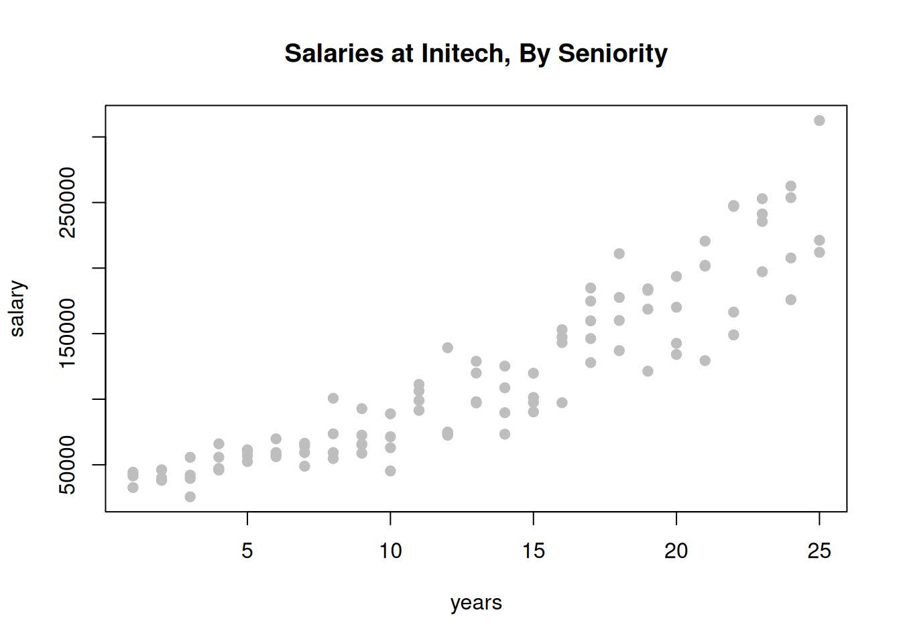
We first fit a simple linear model.
initech_fit <- lm(salary ~ years, data = initech)
summary(initech_fit)
Call:
lm(formula = salary ~ years, data = initech)
Residuals:
Min 1Q Median 3Q Max
-57225 -18104 241 15589 91332
Coefficients:
Estimate Std. Error t value Pr(>|t|)
(Intercept) 5302 5750 0.922 0.359
years 8637 389 22.200 <2e-16 ***
---
Signif. codes: 0 '***' 0.001 '**' 0.01 '*' 0.05 '.' 0.1 ' ' 1
Residual standard error: 27360 on 98 degrees of freedom
Multiple R-squared: 0.8341, Adjusted R-squared: 0.8324
F-statistic: 492.8 on 1 and 98 DF, p-value: < 2.2e-16This model appears significant, but does it meet the model assumptions?
plot(salary ~ years, data = initech, col = "grey", pch = 20, cex = 1.5,
main = "Salaries at Initech, By Seniority")
abline(initech_fit, col = "darkorange", lwd = 2)
Adding the fitted line to the plot, we see that the linear relationship appears correct.
par(mfrow = c(1, 2))
plot(fitted(initech_fit), resid(initech_fit), col = "grey", pch = 20,
xlab = "Fitted", ylab = "Residuals", main = "Fitted versus Residuals")
abline(h = 0, col = "darkorange", lwd = 2)
qqnorm(resid(initech_fit), main = "Normal Q-Q Plot", col = "darkgrey")
qqline(resid(initech_fit), col = "dodgerblue", lwd = 2)
However, from the fitted versus residuals plot it appears there is non-constant variance. Specifically, the variance increases as the fitted value increases.
Variance Stabilizing Transformations
Recall the fitted value is our estimate of the mean at a particular value of \(x\). Under our usual assumptions,
\[ \epsilon \sim N(0,\sigma^2) \]
and thus
\[ \text{Var}[Y | X = x] = \sigma^2 \]
which is a constant value for any value of \(x\).
However, here we see that the variance is a function of the mean,
\[ \text{Var}[Y \mid X = x] = h(\text{E}[Y \mid X = x]). \]
In this case, \(h\) is some increasing function.
In order to correct for this, we would like to find some function of \(Y\), \(g(Y)\) such that,
\[ \text{Var}[g(Y) \mid X = x] = c \]
where \(c\) is a constant that does not depend on the mean, \(\text{E}[Y \mid X = x]\). A transformation that accomplishes this is called a variance stabilizing transformation.
A common variance stabilizing transformation (VST) when we see increasing variance in a fitted versus residuals plot is \(\log(Y)\). Also, if the values of a variable range over more than one order of magnitude and the variable is strictly positive, then replacing the variable by its logarithm is likely to be helpful.
A reminder, that for our purposes, \(\log\) and \(\ln\) are both the natural log. R uses log to mean the natural log, unless a different base is specified.
We will now use a model with a log transformed response for the Initech data,
\[ \log(Y_i) = \beta_0 + \beta_1 x_i + \epsilon_i. \]
Note, if we re-scale the model from a log scale back to the original scale of the data, we now have
\[ Y_i = \exp(\beta_0 + \beta_1 x_i) \cdot \exp(\epsilon_i) \]
which has the errors entering the model in a multiplicative fashion.
Fitting this model in R requires only a minor modification to our formula specification.
initech_fit_log <- lm(log(salary) ~ years, data = initech)Note that while log(y) is considered the new response variable, we do not actually create a new variable in R, but simply transform the variable inside the model formula.
plot(log(salary) ~ years, data = initech, col = "grey", pch = 20, cex = 1.5,
main = "Salaries at Initech, By Seniority")
abline(initech_fit_log, col = "darkorange", lwd = 2)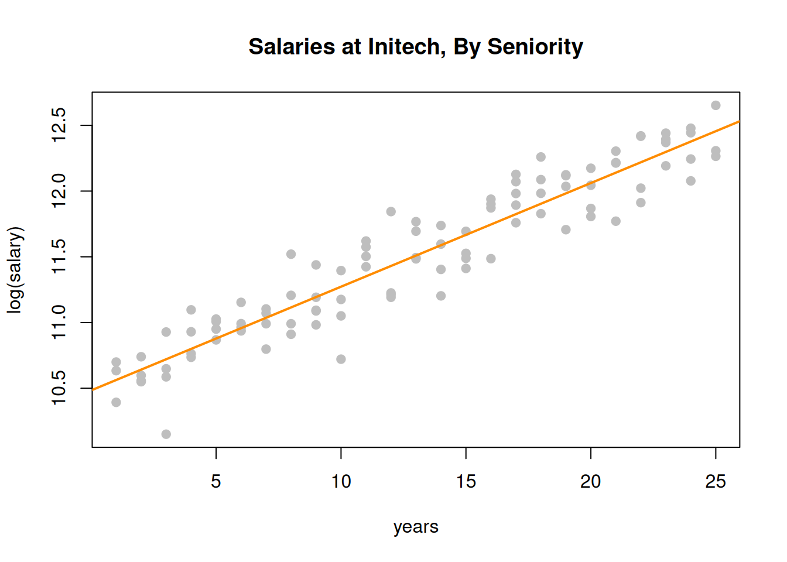
Plotting the data on the transformed log scale and adding the fitted line, the relationship again appears linear, and we can already see that the variation about the fitted line looks constant.
plot(salary ~ years, data = initech, col = "grey", pch = 20, cex = 1.5,
main = "Salaries at Initech, By Seniority")
curve(exp(initech_fit_log$coef[1] + initech_fit_log$coef[2] * x),
from = 0, to = 30, add = TRUE, col = "darkorange", lwd = 2)
By plotting the data on the original scale, and adding the fitted regression, we see an exponential relationship. However, this is still a linear model, since the new transformed response, \(\log(y)\), is still a linear combination of the predictors.
par(mfrow = c(1, 2))
plot(fitted(initech_fit_log), resid(initech_fit_log), col = "grey", pch = 20,
xlab = "Fitted", ylab = "Residuals", main = "Fitted versus Residuals")
abline(h = 0, col = "darkorange", lwd = 2)
qqnorm(resid(initech_fit_log), main = "Normal Q-Q Plot", col = "darkgrey")
qqline(resid(initech_fit_log), col = "dodgerblue", lwd = 2)
The fitted versus residuals plot looks much better. It appears the constant variance assumption is no longer violated.
Comparing the RMSE using the original and transformed response, we also see that the log transformed model simply fits better, with a smaller average squared error.
sqrt(mean(resid(initech_fit) ^ 2))[1] 27080.16sqrt(mean(resid(initech_fit_log) ^ 2))[1] 0.1934907But wait, that isn’t fair, this difference is simply due to the different scales being used.
sqrt(mean((initech$salary - fitted(initech_fit)) ^ 2))[1] 27080.16sqrt(mean((initech$salary - exp(fitted(initech_fit_log))) ^ 2))[1] 24280.36Transforming the fitted values of the log model back to the data scale, we do indeed see that it fits better!
summary(initech_fit_log)
Call:
lm(formula = log(salary) ~ years, data = initech)
Residuals:
Min 1Q Median 3Q Max
-0.57022 -0.13560 0.03048 0.14157 0.41366
Coefficients:
Estimate Std. Error t value Pr(>|t|)
(Intercept) 10.48381 0.04108 255.18 <2e-16 ***
years 0.07888 0.00278 28.38 <2e-16 ***
---
Signif. codes: 0 '***' 0.001 '**' 0.01 '*' 0.05 '.' 0.1 ' ' 1
Residual standard error: 0.1955 on 98 degrees of freedom
Multiple R-squared: 0.8915, Adjusted R-squared: 0.8904
F-statistic: 805.2 on 1 and 98 DF, p-value: < 2.2e-16Again, the transformed response is a linear combination of the predictors,
\[ \log(\hat{y}(x)) = \hat{\beta}_0 + \hat{\beta}_1 x = 10.484 + 0.079x. \]
But now, if we re-scale the data from a log scale back to the original scale of the data, we now have
\[ \hat{y}(x) = \exp(\hat{\beta}_0) \exp(\hat{\beta}_1 x) = \exp(10.484)\exp(0.079x). \]
We see that for every one additional year of experience, average salary increases \(\exp(0.079) = 1.0822\) times. We are now multiplying, not adding.
While using a \(\log\) transform is possibly the most common response variable transformation, many others exist. We will now consider a family of transformations and choose the best from among them, which includes the \(\log\) transform.
Box-Cox Transformations
The Box-Cox method considers a family of transformations on strictly positive response variables,
\[ g_\lambda(y) = \left\{ \begin{array}{lr}\displaystyle\frac{y^\lambda - 1}{\lambda} & \lambda \neq 0\\ & \\ \log(y) & \lambda = 0 \end{array} \right. \]
The \(\lambda\) parameter is chosen by numerically maximizing the log-likelihood,
\[ L(\lambda) = -\frac{n}{2}\log(RSS_\lambda / n) + (\lambda -1)\sum \log(y_i). \]
A \(100(1 - \alpha)\%\) confidence interval for \(\lambda\) is,
\[ \left\{ \lambda : L(\lambda) > L(\hat{\lambda}) - \frac{1}{2}\chi_{1,\alpha}^2 \right\} \]
which R will plot for us to help quickly select an appropriate \(\lambda\) value. We often choose a “nice” value from within the confidence interval, instead of the value of \(\lambda\) that truly maximizes the likelihood.
library(MASS)
library(faraway)Here we need the MASS package for the boxcox() function, and we will consider a couple of datasets from the faraway package.
First we will use the savings dataset as an example of using the Box-Cox method to justify the use of no transformation. We fit an additive multiple regression model with sr as the response and each of the other variables as predictors.
savings_model <- lm(sr ~ ., data = savings)We then use the boxcox() function to find the best transformation of the form considered by the Box-Cox method.
boxcox(savings_model, plotit = TRUE)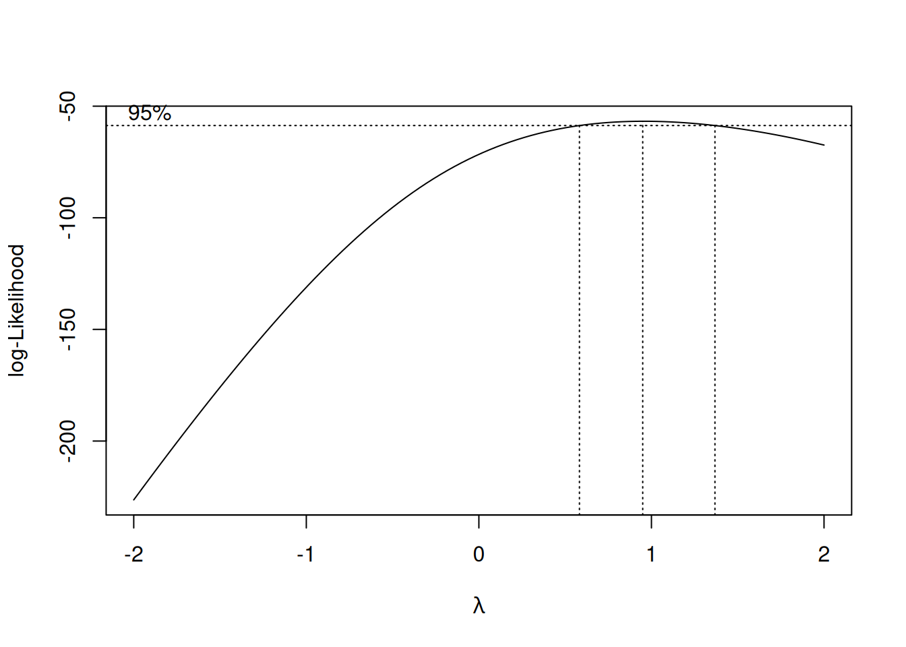
R automatically plots the log-Likelihood as a function of possible \(\lambda\) values. It indicates both the value that maximizes the log-likelihood, as well as a confidence interval for the \(\lambda\) value that maximizes the log-likelihood.
boxcox(savings_model, plotit = TRUE, lambda = seq(0.5, 1.5, by = 0.1))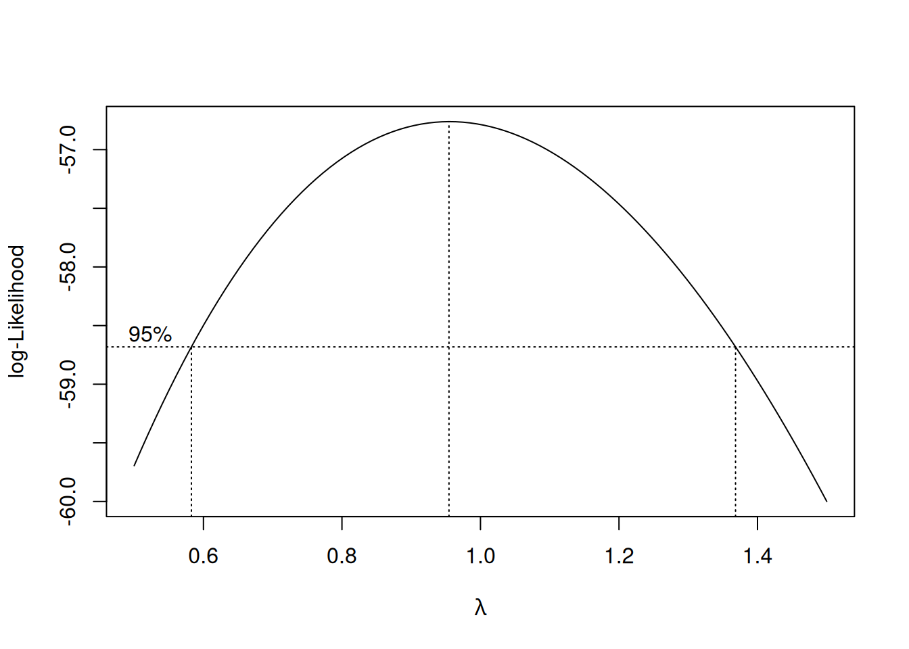
Note that we can specify a range of \(\lambda\) values to consider and thus be plotted. We often specify a range that is more visually interesting. Here we see that \(\lambda = 1\) is both in the confidence interval, and is extremely close to the maximum. This suggests a transformation of the form
\[ \frac{y^\lambda - 1}{\lambda} = \frac{y^1 - 1}{1} = y - 1. \]
This is essentially not a transformation. It would not change the variance or make the model fit better. By subtracting 1 from every value, we would only change the intercept of the model, and the resulting errors would be the same.
plot(fitted(savings_model), resid(savings_model), col = "dodgerblue",
pch = 20, cex = 1.5, xlab = "Fitted", ylab = "Residuals")
abline(h = 0, lty = 2, col = "darkorange", lwd = 2)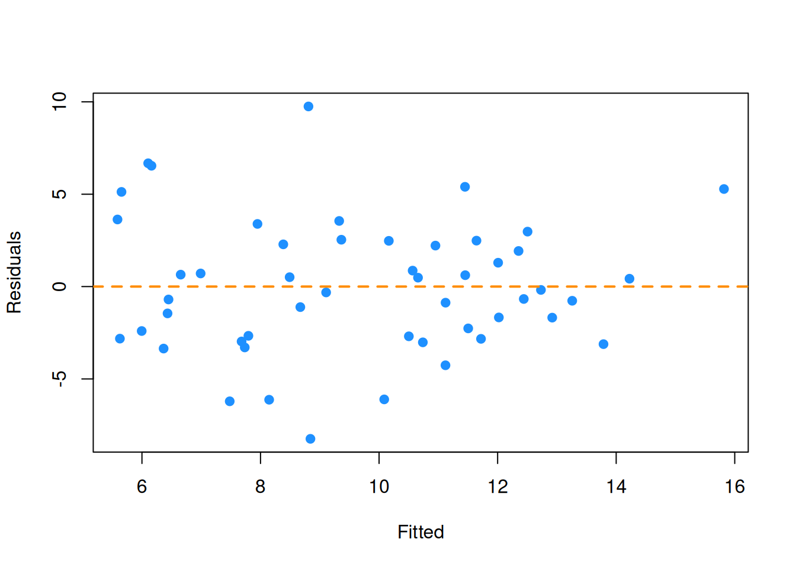
Looking at a fitted versus residuals plot verifies that there likely are not any issues with the assumptions of this model, which Breusch-Pagan and Shapiro-Wilk tests verify.
library(lmtest)
bptest(savings_model)
studentized Breusch-Pagan test
data: savings_model
BP = 4.9852, df = 4, p-value = 0.2888shapiro.test(resid(savings_model))
Shapiro-Wilk normality test
data: resid(savings_model)
W = 0.98698, p-value = 0.8524Now we will use the gala dataset as an example of using the Box-Cox method to justify a transformation other than \(\log\). We fit an additive multiple regression model with Species as the response and most of the other variables as predictors.
gala_model <- lm(Species ~ Area + Elevation + Nearest + Scruz + Adjacent, data = gala)plot(fitted(gala_model), resid(gala_model), col = "dodgerblue",
pch = 20, cex = 1.5, xlab = "Fitted", ylab = "Residuals")
abline(h = 0, lty = 2, col = "darkorange", lwd = 2)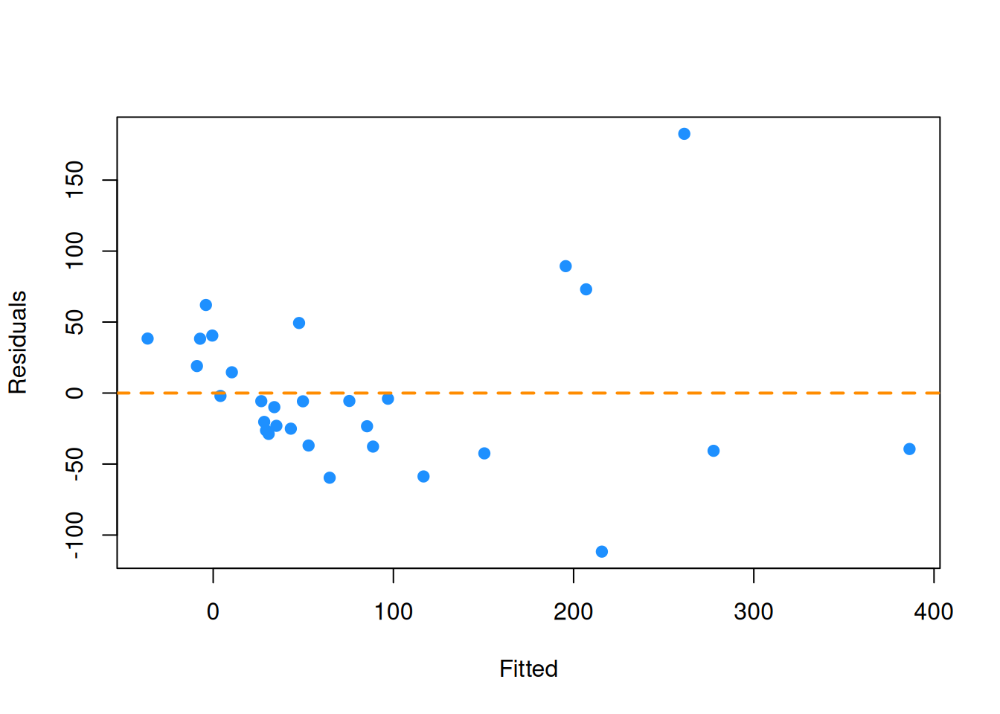
Even though there is not a lot of data for large fitted values, it still seems very clear that the constant variance assumption is violated.
boxcox(gala_model, lambda = seq(-0.25, 0.75, by = 0.05), plotit = TRUE)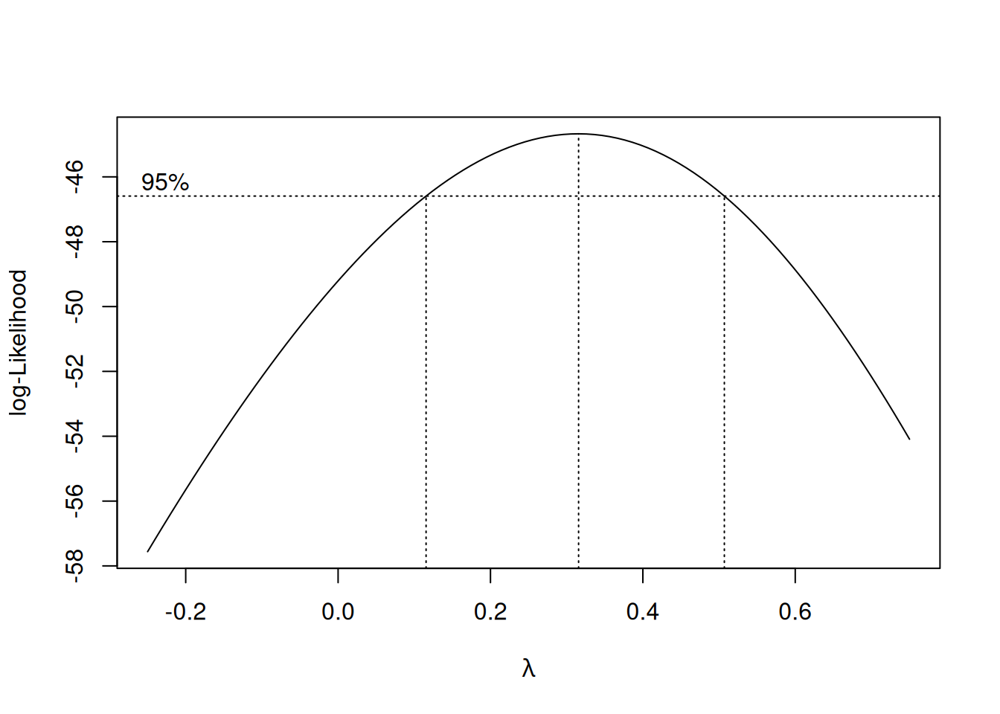
Using the Box-Cox method, we see that \(\lambda = 0.3\) is both in the confidence interval, and is extremely close to the maximum, which suggests a transformation of the form
\[ \frac{y^\lambda - 1}{\lambda} = \frac{y^{0.3} - 1}{0.3}. \]
We then fit a model with this transformation applied to the response.
gala_model_cox <- lm((((Species ^ 0.3) - 1) / 0.3) ~ Area + Elevation + Nearest + Scruz + Adjacent, data = gala)plot(fitted(gala_model_cox), resid(gala_model_cox), col = "dodgerblue",
pch = 20, cex = 1.5, xlab = "Fitted", ylab = "Residuals")
abline(h = 0, lty = 2, col = "darkorange", lwd = 2)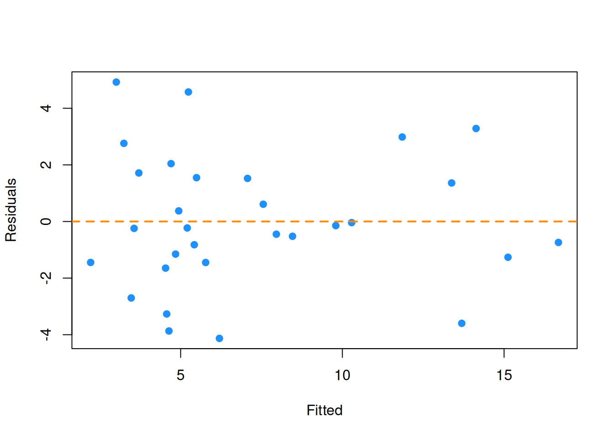
The resulting fitted versus residuals plot looks much better!
Lastly, we return to the initech data, and the initech_fit model we had used earlier. Recall that this was the untransformed model, that we used a \(\log\) transform to fix.
boxcox(initech_fit)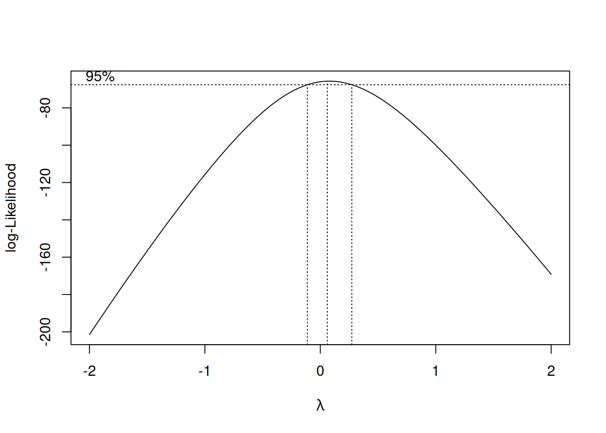
Using the Box-Cox method, we see that \(\lambda = 0\) is both in the interval, and extremely close to the maximum, which suggests a transformation of the form
\[ \log(y). \]
So the Box-Cox method justifies our previous choice of a \(\log\) transform!
14.2 Predictor Transformation
In addition to transformation of the response variable, we can also consider transformations of predictor variables. Sometimes these transformations can help with violation of model assumptions, and other times they can be used to simply fit a more flexible model.
str(autompg)'data.frame': 383 obs. of 9 variables:
$ mpg : num 18 15 18 16 17 15 14 14 14 15 ...
$ cyl : Factor w/ 3 levels "4","6","8": 3 3 3 3 3 3 3 3 3 3 ...
$ disp : num 307 350 318 304 302 429 454 440 455 390 ...
$ hp : num 130 165 150 150 140 198 220 215 225 190 ...
$ wt : num 3504 3693 3436 3433 3449 ...
$ acc : num 12 11.5 11 12 10.5 10 9 8.5 10 8.5 ...
$ year : int 70 70 70 70 70 70 70 70 70 70 ...
$ origin : int 1 1 1 1 1 1 1 1 1 1 ...
$ domestic: num 1 1 1 1 1 1 1 1 1 1 ...Recall the autompg dataset from the previous chapter. Here we will attempt to model mpg as a function of hp.
par(mfrow = c(1, 2))
plot(mpg ~ hp, data = autompg, col = "dodgerblue", pch = 20, cex = 1.5)
mpg_hp <- lm(mpg ~ hp, data = autompg)
abline(mpg_hp, col = "darkorange", lwd = 2)
plot(fitted(mpg_hp), resid(mpg_hp), col = "dodgerblue",
pch = 20, cex = 1.5, xlab = "Fitted", ylab = "Residuals")
abline(h = 0, lty = 2, col = "darkorange", lwd = 2)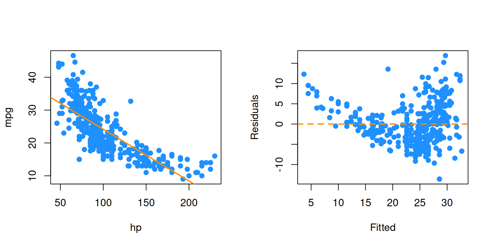
We first attempt SLR, but we see a rather obvious pattern in the fitted versus residuals plot, which includes increasing variance, so we attempt a \(\log\) transform of the response.
par(mfrow = c(1, 2))
plot(log(mpg) ~ hp, data = autompg, col = "dodgerblue", pch = 20, cex = 1.5)
mpg_hp_log <- lm(log(mpg) ~ hp, data = autompg)
abline(mpg_hp_log, col = "darkorange", lwd = 2)
plot(fitted(mpg_hp_log), resid(mpg_hp_log), col = "dodgerblue",
pch = 20, cex = 1.5, xlab = "Fitted", ylab = "Residuals")
abline(h = 0, lty = 2, col = "darkorange", lwd = 2)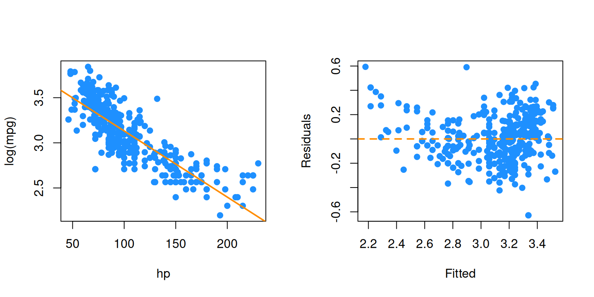
After performing the \(\log\) transform of the response, we still have some of the same issues with the fitted versus response. Now, we will try also \(\log\) transforming the predictor.
par(mfrow = c(1, 2))
plot(log(mpg) ~ log(hp), data = autompg, col = "dodgerblue", pch = 20, cex = 1.5)
mpg_hp_loglog <- lm(log(mpg) ~ log(hp), data = autompg)
abline(mpg_hp_loglog, col = "darkorange", lwd = 2)
plot(fitted(mpg_hp_loglog), resid(mpg_hp_loglog), col = "dodgerblue",
pch = 20, cex = 1.5, xlab = "Fitted", ylab = "Residuals")
abline(h = 0, lty = 2, col = "darkorange", lwd = 2)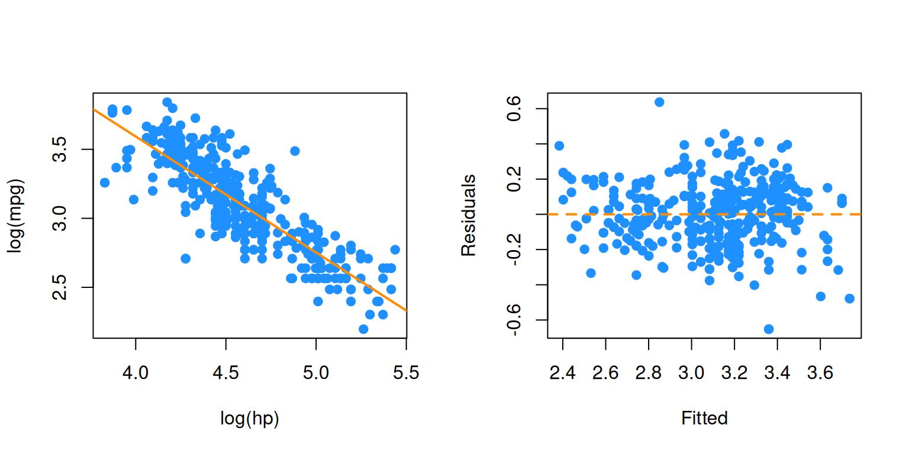
Here, our fitted versus residuals plot looks good.
Polynomials
Another very common “transformation” of a predictor variable is the use of polynomial transformations. They are extremely useful as they allow for more flexible models, but do not change the units of the variables.
It should come as no surprise that sales of a product are related to the advertising budget for the product, but there are diminishing returns. A company cannot always expect linear returns based on an increased advertising budget.
Consider monthly data for the sales of Initech widgets, \(y\), as a function of Initech’s advertising expenditure for said widget, \(x\), both in ten thousand dollars. The data can be found in marketing.csv.
marketing <- read.csv("data/marketing.csv")plot(sales ~ advert, data = marketing,
xlab = "Advert Spending (in $10,000)", ylab = "Sales (in $10,000)",
pch = 20, cex = 2)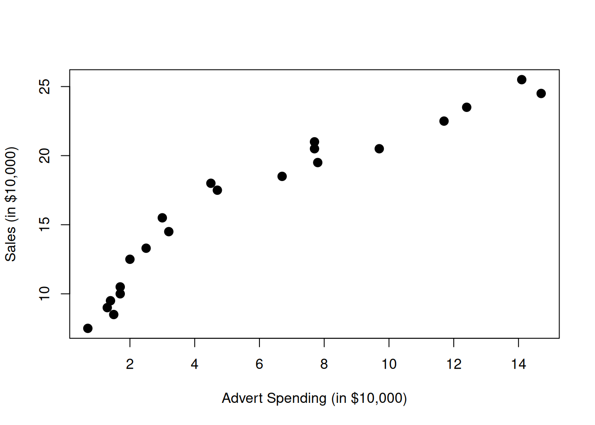
We would like to fit the model,
\[ Y_i = \beta_0 + \beta_1 x_i + \beta_2 x_i^2 + \epsilon_i \]
where \(\epsilon_i \sim N(0,\sigma^2)\) for \(i = 1, 2, \cdots 21.\)
The response \(y\) is now a linear function of “two” variables which now allows \(y\) to be a non-linear function of the original single predictor \(x\). We consider this a transformation, although we have actually in some sense added another predictor.
Thus, our \(X\) matrix is,
\[ \begin{bmatrix} 1 & x_1 & x_1^2 \\]3pt] 1 & x_2 & x_2^2 $$3pt] 1 & x_3 & x_3^2 $$3pt] & & $\(3pt] 1 & x_{n} & x_{n}^2 \\ \end{bmatrix}\)$
We can then proceed to fit the model as we have in the past for multiple linear regression.
\[ \hat{\beta} = \left( X^\top X \right)^{-1}X^\top y. \]
Our estimates will have the usual properties. The mean is still
\[ E[\hat{\beta}] = \beta, \]
and variance
\[ \text{Var}[\hat{\beta}] = \sigma^2 \left( X^\top X \right)^{-1}. \]
We also maintain the same distributional results
\[ \hat{\beta}_j \sim N\left(\beta_j, \sigma^2 C_{jj} \right). \]
mark_mod <- lm(sales ~ advert, data = marketing)
summary(mark_mod)
Call:
lm(formula = sales ~ advert, data = marketing)
Residuals:
Min 1Q Median 3Q Max
-2.7845 -1.4762 -0.5103 1.2361 3.1869
Coefficients:
Estimate Std. Error t value Pr(>|t|)
(Intercept) 9.4502 0.6806 13.88 2.13e-11 ***
advert 1.1918 0.0937 12.72 9.65e-11 ***
---
Signif. codes: 0 '***' 0.001 '**' 0.01 '*' 0.05 '.' 0.1 ' ' 1
Residual standard error: 1.907 on 19 degrees of freedom
Multiple R-squared: 0.8949, Adjusted R-squared: 0.8894
F-statistic: 161.8 on 1 and 19 DF, p-value: 9.646e-11While the SLR model is significant, the fitted versus residuals plot would have a very clear pattern.
mark_mod_poly2 <- lm(sales ~ advert + I(advert ^ 2), data = marketing)
summary(mark_mod_poly2)
Call:
lm(formula = sales ~ advert + I(advert^2), data = marketing)
Residuals:
Min 1Q Median 3Q Max
-1.9175 -0.8333 -0.1948 0.9292 2.1385
Coefficients:
Estimate Std. Error t value Pr(>|t|)
(Intercept) 6.76161 0.67219 10.059 8.16e-09 ***
advert 2.46231 0.24830 9.917 1.02e-08 ***
I(advert^2) -0.08745 0.01658 -5.275 5.14e-05 ***
---
Signif. codes: 0 '***' 0.001 '**' 0.01 '*' 0.05 '.' 0.1 ' ' 1
Residual standard error: 1.228 on 18 degrees of freedom
Multiple R-squared: 0.9587, Adjusted R-squared: 0.9541
F-statistic: 209 on 2 and 18 DF, p-value: 3.486e-13To add the second order term we need to use the I() function in the model specification around our newly created predictor. We see that with the first order term in the model, the quadratic term is also significant.
n <- length(marketing$advert)
X <- cbind(rep(1, n), marketing$advert, marketing$advert ^ 2)
t(X) %*% X [,1] [,2] [,3]
[1,] 21.00 120.70 1107.95
[2,] 120.70 1107.95 12385.86
[3,] 1107.95 12385.86 151369.12solve(t(X) %*% X) %*% t(X) %*% marketing$sales [,1]
[1,] 6.76161045
[2,] 2.46230964
[3,] -0.08745394Here we verify the parameter estimates were found as we would expect.
We could also add higher order terms, such as a third degree predictor. This is easy to do. Our \(X\) matrix simply becomes larger again.
\[ Y_i = \beta_0 + \beta_1 x_i + \beta_2 x_i^2 + \beta_3 x_i^3 + \epsilon_i \]
\[ \begin{bmatrix} 1 & x_1 & x_1^2 & x_1^3 \\]3pt] 1 & x_2 & x_2^2 & x_2^3 $$3pt] 1 & x_3 & x_3^2 & x_3^3 $$3pt] & & & $\(3pt] 1 & x_{n} & x_{n}^2 & x_{n}^3 \\ \end{bmatrix}\)$
mark_mod_poly3 <- lm(sales ~ advert + I(advert ^ 2) + I(advert ^ 3), data = marketing)
summary(mark_mod_poly3)
Call:
lm(formula = sales ~ advert + I(advert^2) + I(advert^3), data = marketing)
Residuals:
Min 1Q Median 3Q Max
-1.44322 -0.61310 -0.01527 0.68131 1.22517
Coefficients:
Estimate Std. Error t value Pr(>|t|)
(Intercept) 3.890070 0.761956 5.105 8.79e-05 ***
advert 4.681864 0.501032 9.344 4.14e-08 ***
I(advert^2) -0.455152 0.078977 -5.763 2.30e-05 ***
I(advert^3) 0.016131 0.003429 4.704 0.000205 ***
---
Signif. codes: 0 '***' 0.001 '**' 0.01 '*' 0.05 '.' 0.1 ' ' 1
Residual standard error: 0.8329 on 17 degrees of freedom
Multiple R-squared: 0.9821, Adjusted R-squared: 0.9789
F-statistic: 310.2 on 3 and 17 DF, p-value: 4.892e-15Now we see that with the first and second order terms in the model, the third order term is also significant. But does this make sense practically? The following plot should gives hints as to why it doesn’t. (The model with the third order term doesn’t have diminishing returns!)
plot(sales ~ advert, data = marketing,
xlab = "Advert Spending (in $10,000)", ylab = "Sales (in $10,000)",
pch = 20, cex = 2)
abline(mark_mod, lty = 2, col = "green", lwd = 2)
xplot <- seq(0, 16, by = 0.01)
lines(xplot, predict(mark_mod_poly2, newdata = data.frame(advert = xplot)),
col = "blue", lwd = 2)
lines(xplot, predict(mark_mod_poly3, newdata = data.frame(advert = xplot)),
col = "red", lty = 3, lwd = 3)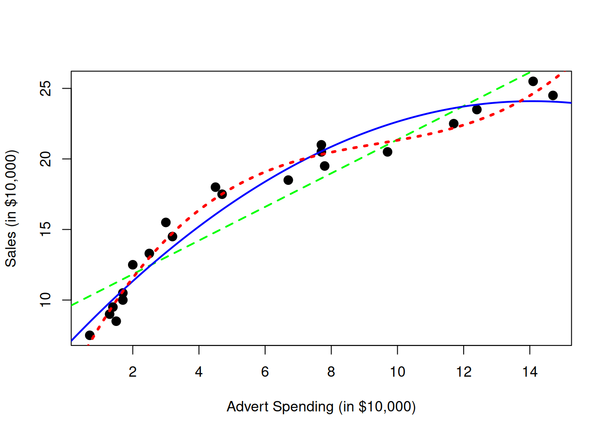
The previous plot was made using base graphics in R. The next plot was made using the package ggplot2, an increasingly popular plotting method in R.
library(ggplot2)
ggplot(data = marketing, aes(x = advert, y = sales)) +
stat_smooth(method = "lm", se = FALSE, color = "green", formula = y ~ x) +
stat_smooth(method = "lm", se = FALSE, color = "blue", formula = y ~ x + I(x ^ 2)) +
stat_smooth(method = "lm", se = FALSE, color = "red", formula = y ~ x + I(x ^ 2)+ I(x ^ 3)) +
geom_point(colour = "black", size = 3)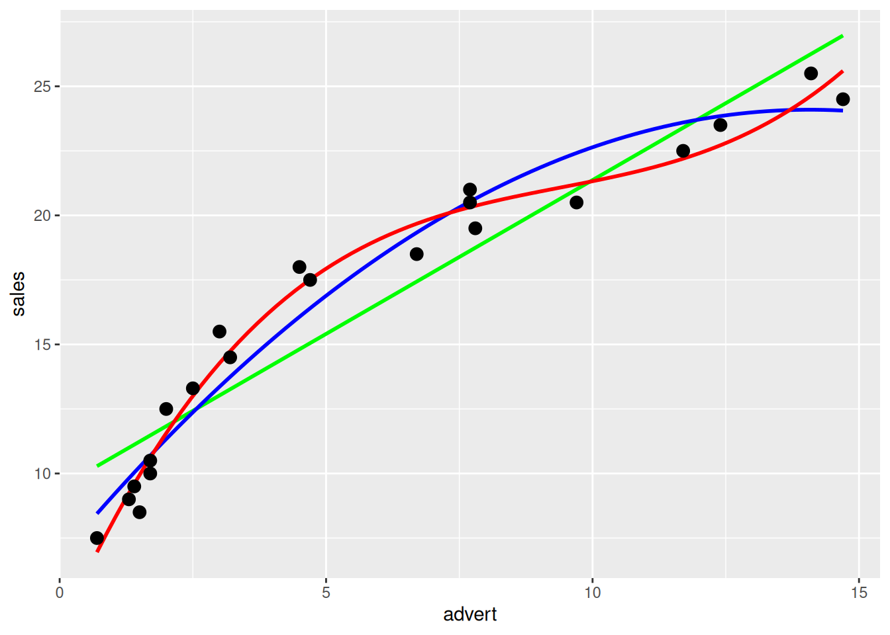
Note we could fit a polynomial of an arbitrary order,
\[ Y_i = \beta_0 + \beta_1 x_i + \beta_2 x_i^2 + \cdots + \beta_{p-1}x_i^{p-1} + \epsilon_i \]
However, we should be careful about over-fitting, since with a polynomial of degree one less than the number of observations, it is sometimes possible to fit a model perfectly.
set.seed(1234)
x <- seq(0, 10)
y <- 3 + x + 4 * x ^ 2 + rnorm(11, 0, 20)
plot(x, y, ylim = c(-300, 400), cex = 2, pch = 20)
fit <- lm(y ~ x + I(x ^ 2))
#summary(fit)
fit_perf <- lm(y ~ x + I(x ^ 2) + I(x ^ 3) + I(x ^ 4) + I(x ^ 5) + I(x ^ 6)
+ I(x ^ 7) + I(x ^ 8) + I(x ^ 9) + I(x ^ 10))
summary(fit_perf)
Call:
lm(formula = y ~ x + I(x^2) + I(x^3) + I(x^4) + I(x^5) + I(x^6) +
I(x^7) + I(x^8) + I(x^9) + I(x^10))
Residuals:
ALL 11 residuals are 0: no residual degrees of freedom!
Coefficients:
Estimate Std. Error t value Pr(>|t|)
(Intercept) -2.114e+01 NaN NaN NaN
x -1.918e+03 NaN NaN NaN
I(x^2) 4.969e+03 NaN NaN NaN
I(x^3) -4.932e+03 NaN NaN NaN
I(x^4) 2.581e+03 NaN NaN NaN
I(x^5) -8.035e+02 NaN NaN NaN
I(x^6) 1.570e+02 NaN NaN NaN
I(x^7) -1.947e+01 NaN NaN NaN
I(x^8) 1.490e+00 NaN NaN NaN
I(x^9) -6.424e-02 NaN NaN NaN
I(x^10) 1.195e-03 NaN NaN NaN
Residual standard error: NaN on 0 degrees of freedom
Multiple R-squared: 1, Adjusted R-squared: NaN
F-statistic: NaN on 10 and 0 DF, p-value: NAxplot <- seq(0, 10, by = 0.1)
lines(xplot, predict(fit, newdata = data.frame(x = xplot)),
col = "dodgerblue", lwd = 2, lty = 1)
lines(xplot, predict(fit_perf, newdata = data.frame(x = xplot)),
col = "darkorange", lwd = 2, lty = 2)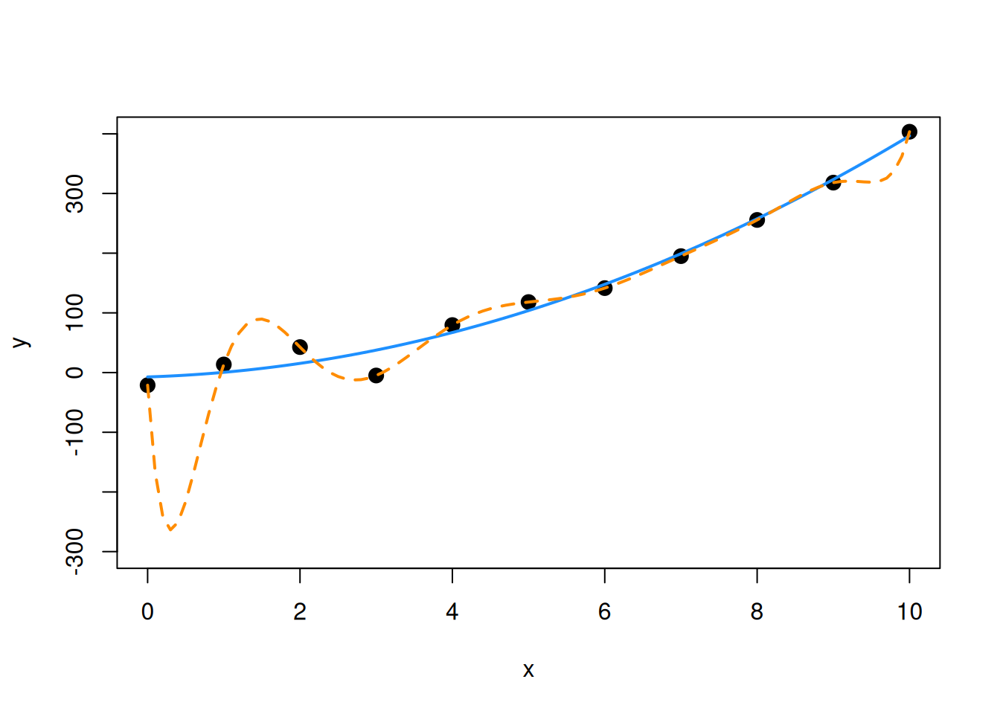
Notice in the summary, R could not calculate standard errors. This is a result of being “out” of degrees of freedom. With 11 \(\beta\) parameters and 11 data points, we use up all the degrees of freedom before we can estimate \(\sigma\).
In this example, the true relationship is quadratic, but the order 10 polynomial’s fit is “perfect”. Next chapter we will focus on the trade-off between goodness of fit (minimizing errors) and complexity of model.
Suppose you work for an automobile manufacturer which makes a large luxury sedan. You would like to know how the car performs from a fuel efficiency standpoint when it is driven at various speeds. Instead of testing the car at every conceivable speed (which would be impossible) you create an experiment where the car is driven at speeds of interest in increments of 5 miles per hour.
Our goal then, is to fit a model to this data in order to be able to predict fuel efficiency when driving at certain speeds. The data from this example can be found in fuel_econ.csv.
econ <- read.csv("data/fuel_econ.csv")In this example, we will be frequently looking at the fitted versus residuals plot, so we should write a function to make our life easier, but this is left as an exercise for homework.
We will also be adding fitted curves to scatterplots repeatedly, so smartly we will write a function to do so.
plot_econ_curve <- function(model) {
plot(mpg ~ mph, data = econ, xlab = "Speed (Miles per Hour)",
ylab = "Fuel Efficiency (Miles per Gallon)", col = "dodgerblue",
pch = 20, cex = 2)
xplot = seq(10, 75, by = 0.1)
lines(xplot, predict(model, newdata = data.frame(mph = xplot)),
col = "darkorange", lwd = 2, lty = 1)
}So now we first fit a simple linear regression to this data.
fit1 <- lm(mpg ~ mph, data = econ)par(mfrow = c(1, 2))
plot_econ_curve(fit1)
plot(fitted(fit1), resid(fit1), xlab = "Fitted", ylab = "Residuals",
col = "dodgerblue", pch = 20, cex = 2)
abline(h = 0, col = "darkorange", lwd = 2)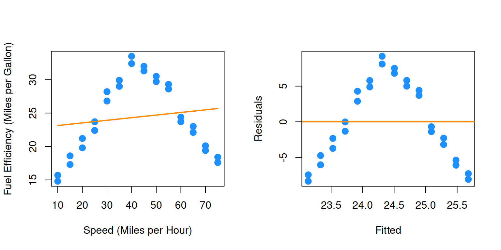
Pretty clearly we can do better. Yes fuel efficiency does increase as speed increases, but only up to a certain point.
We will now add polynomial terms until we fit a suitable fit.
fit2 <- lm(mpg ~ mph + I(mph ^ 2), data = econ)
summary(fit2)
Call:
lm(formula = mpg ~ mph + I(mph^2), data = econ)
Residuals:
Min 1Q Median 3Q Max
-2.8411 -0.9694 0.0017 1.0181 3.3900
Coefficients:
Estimate Std. Error t value Pr(>|t|)
(Intercept) 2.4444505 1.4241091 1.716 0.0984 .
mph 1.2716937 0.0757321 16.792 3.99e-15 ***
I(mph^2) -0.0145014 0.0008719 -16.633 4.97e-15 ***
---
Signif. codes: 0 '***' 0.001 '**' 0.01 '*' 0.05 '.' 0.1 ' ' 1
Residual standard error: 1.663 on 25 degrees of freedom
Multiple R-squared: 0.9188, Adjusted R-squared: 0.9123
F-statistic: 141.5 on 2 and 25 DF, p-value: 2.338e-14par(mfrow = c(1, 2))
plot_econ_curve(fit2)
plot(fitted(fit2), resid(fit2), xlab = "Fitted", ylab = "Residuals",
col = "dodgerblue", pch = 20, cex = 2)
abline(h = 0, col = "darkorange", lwd = 2)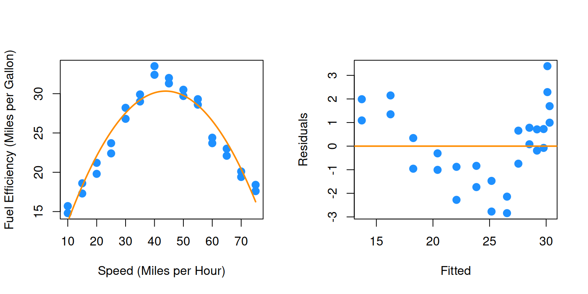
While this model clearly fits much better, and the second order term is significant, we still see a pattern in the fitted versus residuals plot which suggests higher order terms will help. Also, we would expect the curve to flatten as speed increases or decreases, not go sharply downward as we see here.
fit3 <- lm(mpg ~ mph + I(mph ^ 2) + I(mph ^ 3), data = econ)
summary(fit3)
Call:
lm(formula = mpg ~ mph + I(mph^2) + I(mph^3), data = econ)
Residuals:
Min 1Q Median 3Q Max
-2.8112 -0.9677 0.0264 1.0345 3.3827
Coefficients:
Estimate Std. Error t value Pr(>|t|)
(Intercept) 2.258e+00 2.768e+00 0.816 0.4227
mph 1.291e+00 2.529e-01 5.103 3.2e-05 ***
I(mph^2) -1.502e-02 6.604e-03 -2.274 0.0322 *
I(mph^3) 4.066e-06 5.132e-05 0.079 0.9375
---
Signif. codes: 0 '***' 0.001 '**' 0.01 '*' 0.05 '.' 0.1 ' ' 1
Residual standard error: 1.697 on 24 degrees of freedom
Multiple R-squared: 0.9188, Adjusted R-squared: 0.9087
F-statistic: 90.56 on 3 and 24 DF, p-value: 3.17e-13par(mfrow = c(1, 2))
plot_econ_curve(fit3)
plot(fitted(fit3), resid(fit3), xlab = "Fitted", ylab = "Residuals",
col = "dodgerblue", pch = 20, cex = 2)
abline(h = 0, col = "darkorange", lwd = 2)Adding the third order term doesn’t seem to help at all. The fitted curve hardly changes. This makes sense, since what we would like is for the curve to flatten at the extremes. For this we will need an even degree polynomial term.
fit4 <- lm(mpg ~ mph + I(mph ^ 2) + I(mph ^ 3) + I(mph ^ 4), data = econ)
summary(fit4)
Call:
lm(formula = mpg ~ mph + I(mph^2) + I(mph^3) + I(mph^4), data = econ)
Residuals:
Min 1Q Median 3Q Max
-1.57410 -0.60308 0.04236 0.74481 1.93038
Coefficients:
Estimate Std. Error t value Pr(>|t|)
(Intercept) 2.146e+01 2.965e+00 7.238 2.28e-07 ***
mph -1.468e+00 3.913e-01 -3.751 0.00104 **
I(mph^2) 1.081e-01 1.673e-02 6.463 1.35e-06 ***
I(mph^3) -2.130e-03 2.844e-04 -7.488 1.31e-07 ***
I(mph^4) 1.255e-05 1.665e-06 7.539 1.17e-07 ***
---
Signif. codes: 0 '***' 0.001 '**' 0.01 '*' 0.05 '.' 0.1 ' ' 1
Residual standard error: 0.9307 on 23 degrees of freedom
Multiple R-squared: 0.9766, Adjusted R-squared: 0.9726
F-statistic: 240.2 on 4 and 23 DF, p-value: < 2.2e-16par(mfrow = c(1, 2))
plot_econ_curve(fit4)
plot(fitted(fit4), resid(fit4), xlab = "Fitted", ylab = "Residuals",
col = "dodgerblue", pch = 20, cex = 2)
abline(h = 0, col = "darkorange", lwd = 2)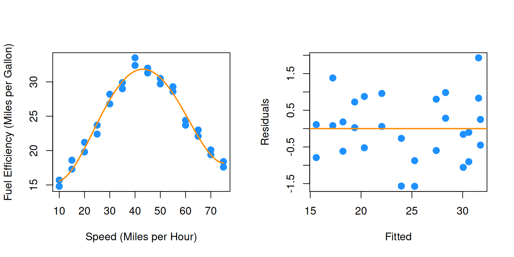
Now we are making progress. The fourth order term is significant with the other terms in the model. Also we are starting to see what we expected for low and high speed. However, there still seems to be a bit of a pattern in the residuals, so we will again try more higher order terms. We will add the fifth and sixth together, since adding the fifth will be similar to adding the third.
fit6 <- lm(mpg ~ mph + I(mph ^ 2) + I(mph ^ 3) + I(mph ^ 4) + I(mph ^ 5) + I(mph^6), data = econ)
summary(fit6)
Call:
lm(formula = mpg ~ mph + I(mph^2) + I(mph^3) + I(mph^4) + I(mph^5) +
I(mph^6), data = econ)
Residuals:
Min 1Q Median 3Q Max
-1.1129 -0.5717 -0.1707 0.5026 1.5288
Coefficients:
Estimate Std. Error t value Pr(>|t|)
(Intercept) -4.206e+00 1.204e+01 -0.349 0.7304
mph 4.203e+00 2.553e+00 1.646 0.1146
I(mph^2) -3.521e-01 2.012e-01 -1.750 0.0947 .
I(mph^3) 1.579e-02 7.691e-03 2.053 0.0527 .
I(mph^4) -3.473e-04 1.529e-04 -2.271 0.0338 *
I(mph^5) 3.585e-06 1.518e-06 2.362 0.0279 *
I(mph^6) -1.402e-08 5.941e-09 -2.360 0.0280 *
---
Signif. codes: 0 '***' 0.001 '**' 0.01 '*' 0.05 '.' 0.1 ' ' 1
Residual standard error: 0.8657 on 21 degrees of freedom
Multiple R-squared: 0.9815, Adjusted R-squared: 0.9762
F-statistic: 186 on 6 and 21 DF, p-value: < 2.2e-16par(mfrow = c(1, 2))
plot_econ_curve(fit6)
plot(fitted(fit6), resid(fit6), xlab = "Fitted", ylab = "Residuals",
col = "dodgerblue", pch = 20, cex = 2)
abline(h = 0, col = "darkorange", lwd = 2)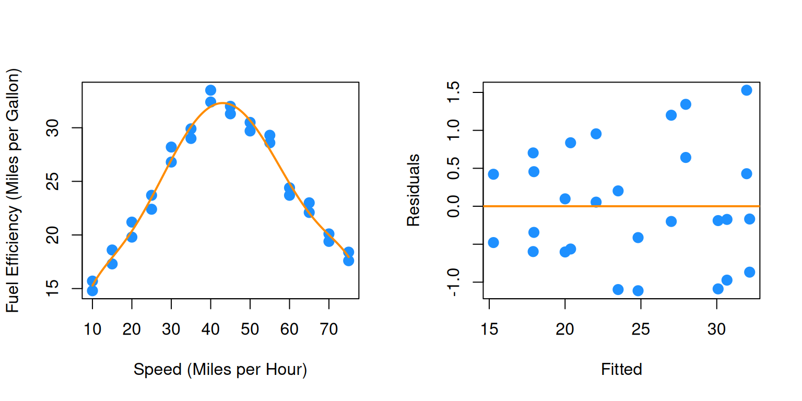
Again the sixth order term is significant with the other terms in the model and here we see less pattern in the residuals plot. Let’s now test which of the previous two models we prefer. We will test
\[ H_0: \beta_5 = \beta_6 = 0. \]
anova(fit4, fit6)Analysis of Variance Table
Model 1: mpg ~ mph + I(mph^2) + I(mph^3) + I(mph^4)
Model 2: mpg ~ mph + I(mph^2) + I(mph^3) + I(mph^4) + I(mph^5) + I(mph^6)
Res.Df RSS Df Sum of Sq F Pr(>F)
1 23 19.922
2 21 15.739 2 4.1828 2.7905 0.0842 .
---
Signif. codes: 0 '***' 0.001 '**' 0.01 '*' 0.05 '.' 0.1 ' ' 1So, this test does not reject the null hypothesis at a level of significance of \(\alpha = 0.05\), however the p-value is still rather small, and the fitted versus residuals plot is much better for the model with the sixth order term. This makes the sixth order model a good choice. We could repeat this process one more time.
fit8 <- lm(mpg ~ mph + I(mph ^ 2) + I(mph ^ 3) + I(mph ^ 4) + I(mph ^ 5)
+ I(mph ^ 6) + I(mph ^ 7) + I(mph ^ 8), data = econ)
summary(fit8)
Call:
lm(formula = mpg ~ mph + I(mph^2) + I(mph^3) + I(mph^4) + I(mph^5) +
I(mph^6) + I(mph^7) + I(mph^8), data = econ)
Residuals:
Min 1Q Median 3Q Max
-1.21938 -0.50464 -0.09105 0.49029 1.45440
Coefficients:
Estimate Std. Error t value Pr(>|t|)
(Intercept) -1.202e+01 7.045e+01 -0.171 0.866
mph 6.021e+00 2.014e+01 0.299 0.768
I(mph^2) -5.037e-01 2.313e+00 -0.218 0.830
I(mph^3) 2.121e-02 1.408e-01 0.151 0.882
I(mph^4) -4.008e-04 5.017e-03 -0.080 0.937
I(mph^5) 1.789e-06 1.080e-04 0.017 0.987
I(mph^6) 4.486e-08 1.381e-06 0.032 0.974
I(mph^7) -6.456e-10 9.649e-09 -0.067 0.947
I(mph^8) 2.530e-12 2.835e-11 0.089 0.930
Residual standard error: 0.9034 on 19 degrees of freedom
Multiple R-squared: 0.9818, Adjusted R-squared: 0.9741
F-statistic: 128.1 on 8 and 19 DF, p-value: 7.074e-15par(mfrow = c(1, 2))
plot_econ_curve(fit8)
plot(fitted(fit8), resid(fit8), xlab = "Fitted", ylab = "Residuals",
col = "dodgerblue", pch = 20, cex = 2)
abline(h = 0, col = "darkorange", lwd = 2)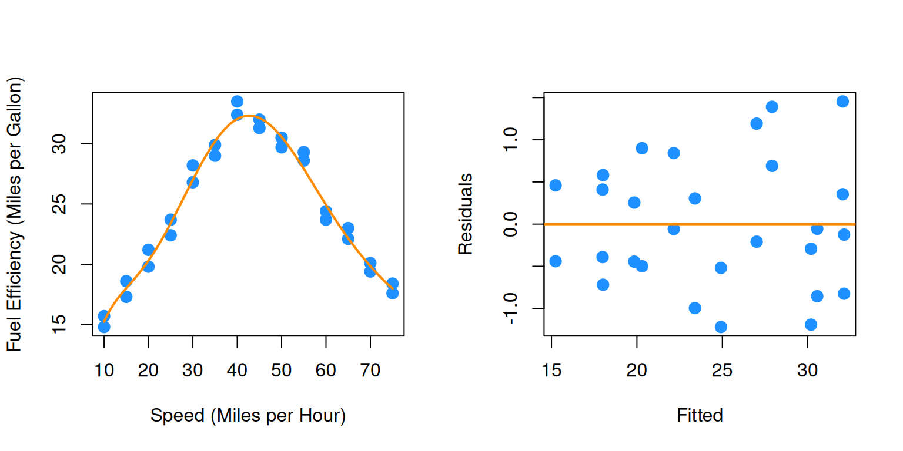
summary(fit8)
Call:
lm(formula = mpg ~ mph + I(mph^2) + I(mph^3) + I(mph^4) + I(mph^5) +
I(mph^6) + I(mph^7) + I(mph^8), data = econ)
Residuals:
Min 1Q Median 3Q Max
-1.21938 -0.50464 -0.09105 0.49029 1.45440
Coefficients:
Estimate Std. Error t value Pr(>|t|)
(Intercept) -1.202e+01 7.045e+01 -0.171 0.866
mph 6.021e+00 2.014e+01 0.299 0.768
I(mph^2) -5.037e-01 2.313e+00 -0.218 0.830
I(mph^3) 2.121e-02 1.408e-01 0.151 0.882
I(mph^4) -4.008e-04 5.017e-03 -0.080 0.937
I(mph^5) 1.789e-06 1.080e-04 0.017 0.987
I(mph^6) 4.486e-08 1.381e-06 0.032 0.974
I(mph^7) -6.456e-10 9.649e-09 -0.067 0.947
I(mph^8) 2.530e-12 2.835e-11 0.089 0.930
Residual standard error: 0.9034 on 19 degrees of freedom
Multiple R-squared: 0.9818, Adjusted R-squared: 0.9741
F-statistic: 128.1 on 8 and 19 DF, p-value: 7.074e-15anova(fit6, fit8)Analysis of Variance Table
Model 1: mpg ~ mph + I(mph^2) + I(mph^3) + I(mph^4) + I(mph^5) + I(mph^6)
Model 2: mpg ~ mph + I(mph^2) + I(mph^3) + I(mph^4) + I(mph^5) + I(mph^6) +
I(mph^7) + I(mph^8)
Res.Df RSS Df Sum of Sq F Pr(>F)
1 21 15.739
2 19 15.506 2 0.2324 0.1424 0.8682Here we would clearly stick with fit6. The eighth order term is not significant with the other terms in the model and the F-test does not reject.
As an aside, be aware that there is a quicker way to specify a model with many higher order terms.
fit6_alt <- lm(mpg ~ poly(mph, 6), data = econ)
all.equal(fitted(fit6), fitted(fit6_alt))[1] TRUEWe first verify that this method produces the same fitted values. However, the estimated coefficients are different.
coef(fit6) (Intercept) mph I(mph^2) I(mph^3) I(mph^4)
-4.206224e+00 4.203382e+00 -3.521452e-01 1.579340e-02 -3.472665e-04
I(mph^5) I(mph^6)
3.585201e-06 -1.401995e-08 coef(fit6_alt) (Intercept) poly(mph, 6)1 poly(mph, 6)2 poly(mph, 6)3 poly(mph, 6)4
24.40714286 4.16769628 -27.66685755 0.13446747 7.01671480
poly(mph, 6)5 poly(mph, 6)6
0.09288754 -2.04307796 This is because poly() uses orthogonal polynomials, which solves an issue we will discuss in the next chapter.
summary(fit6)
Call:
lm(formula = mpg ~ mph + I(mph^2) + I(mph^3) + I(mph^4) + I(mph^5) +
I(mph^6), data = econ)
Residuals:
Min 1Q Median 3Q Max
-1.1129 -0.5717 -0.1707 0.5026 1.5288
Coefficients:
Estimate Std. Error t value Pr(>|t|)
(Intercept) -4.206e+00 1.204e+01 -0.349 0.7304
mph 4.203e+00 2.553e+00 1.646 0.1146
I(mph^2) -3.521e-01 2.012e-01 -1.750 0.0947 .
I(mph^3) 1.579e-02 7.691e-03 2.053 0.0527 .
I(mph^4) -3.473e-04 1.529e-04 -2.271 0.0338 *
I(mph^5) 3.585e-06 1.518e-06 2.362 0.0279 *
I(mph^6) -1.402e-08 5.941e-09 -2.360 0.0280 *
---
Signif. codes: 0 '***' 0.001 '**' 0.01 '*' 0.05 '.' 0.1 ' ' 1
Residual standard error: 0.8657 on 21 degrees of freedom
Multiple R-squared: 0.9815, Adjusted R-squared: 0.9762
F-statistic: 186 on 6 and 21 DF, p-value: < 2.2e-16summary(fit6_alt)
Call:
lm(formula = mpg ~ poly(mph, 6), data = econ)
Residuals:
Min 1Q Median 3Q Max
-1.1129 -0.5717 -0.1707 0.5026 1.5288
Coefficients:
Estimate Std. Error t value Pr(>|t|)
(Intercept) 24.40714 0.16360 149.184 < 2e-16 ***
poly(mph, 6)1 4.16770 0.86571 4.814 9.31e-05 ***
poly(mph, 6)2 -27.66686 0.86571 -31.958 < 2e-16 ***
poly(mph, 6)3 0.13447 0.86571 0.155 0.878
poly(mph, 6)4 7.01671 0.86571 8.105 6.68e-08 ***
poly(mph, 6)5 0.09289 0.86571 0.107 0.916
poly(mph, 6)6 -2.04308 0.86571 -2.360 0.028 *
---
Signif. codes: 0 '***' 0.001 '**' 0.01 '*' 0.05 '.' 0.1 ' ' 1
Residual standard error: 0.8657 on 21 degrees of freedom
Multiple R-squared: 0.9815, Adjusted R-squared: 0.9762
F-statistic: 186 on 6 and 21 DF, p-value: < 2.2e-16Notice though that the p-value for testing the degree 6 term is the same. Because of this, for the most part we can use these interchangeably.
To use poly() to obtain the same results as using I() repeatedly, we would need to set raw = TRUE.
fit6_alt2 <- lm(mpg ~ poly(mph, 6, raw = TRUE), data = econ)
coef(fit6_alt2) (Intercept) poly(mph, 6, raw = TRUE)1 poly(mph, 6, raw = TRUE)2
-4.206224e+00 4.203382e+00 -3.521452e-01
poly(mph, 6, raw = TRUE)3 poly(mph, 6, raw = TRUE)4 poly(mph, 6, raw = TRUE)5
1.579340e-02 -3.472665e-04 3.585201e-06
poly(mph, 6, raw = TRUE)6
-1.401995e-08 We’ve now seen how to transform predictor and response variables. In this chapter we have mostly focused on using this in the context of fixing SLR models. However, these concepts can easily be used together with categorical variables and interactions to build larger, more flexible models. In the next chapter, we will discuss how to choose a good model from a collection of possible models.
Material below here is currently being merged into the content above.
Response Transformations
initech <- read.csv("data/initech.csv")plot(salary ~ years, data = initech, col = "grey", pch = 20, cex = 1.5,
main = "Salaries at Initech, By Seniority")
initech_fit <- lm(salary ~ years, data = initech)
summary(initech_fit)
Call:
lm(formula = salary ~ years, data = initech)
Residuals:
Min 1Q Median 3Q Max
-57225 -18104 241 15589 91332
Coefficients:
Estimate Std. Error t value Pr(>|t|)
(Intercept) 5302 5750 0.922 0.359
years 8637 389 22.200 <2e-16 ***
---
Signif. codes: 0 '***' 0.001 '**' 0.01 '*' 0.05 '.' 0.1 ' ' 1
Residual standard error: 27360 on 98 degrees of freedom
Multiple R-squared: 0.8341, Adjusted R-squared: 0.8324
F-statistic: 492.8 on 1 and 98 DF, p-value: < 2.2e-16plot(salary ~ years, data = initech, col = "grey", pch = 20, cex = 1.5,
main = "Salaries at Initech, By Seniority")
abline(initech_fit, col = "darkorange", lwd = 2)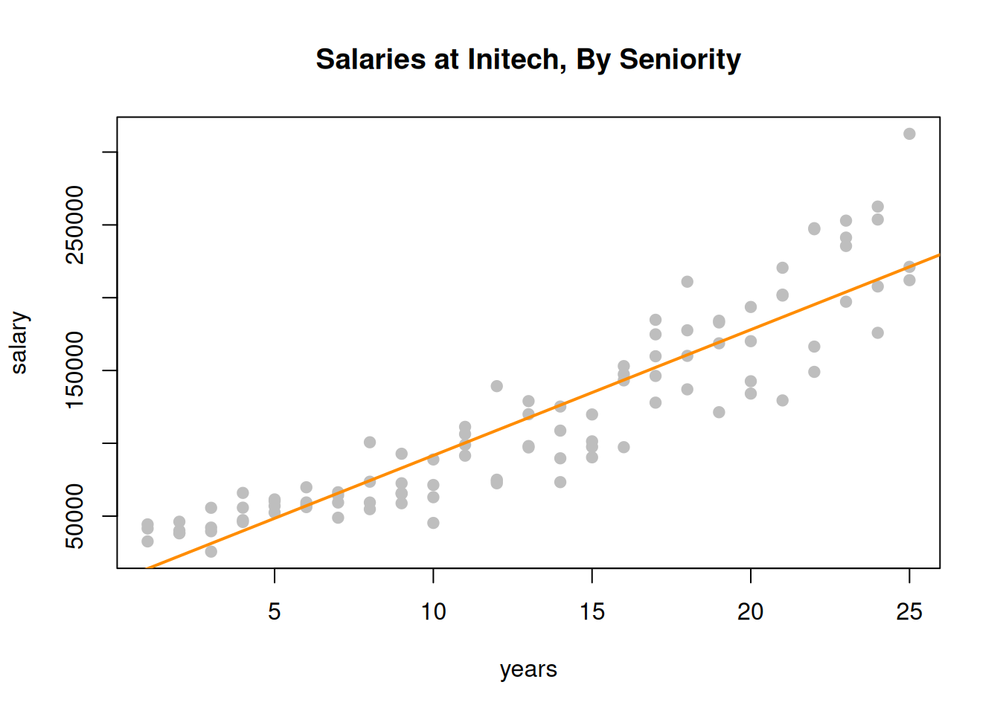
par(mfrow = c(1, 2))
plot(fitted(initech_fit), resid(initech_fit), col = "grey", pch = 20,
xlab = "Fitted", ylab = "Residuals", main = "Fitted versus Residuals")
abline(h = 0, col = "darkorange", lwd = 2)
qqnorm(resid(initech_fit), main = "Normal Q-Q Plot", col = "darkgrey")
qqline(resid(initech_fit), col = "dodgerblue", lwd = 2)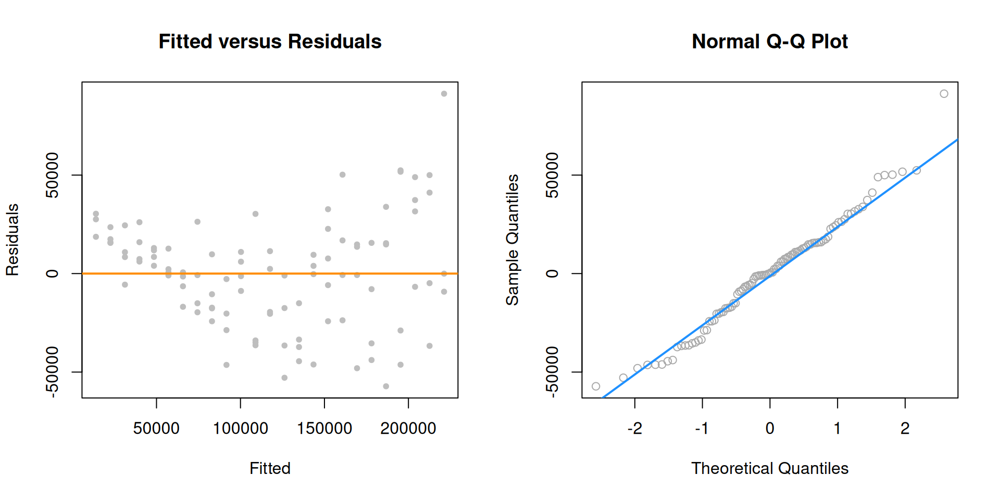
initech_fit_log <- lm(log(salary) ~ years, data = initech)\[ \log(Y_i) = \beta_0 + \beta_1 x_i + \epsilon_i \]
plot(log(salary) ~ years, data = initech, col = "grey", pch = 20, cex = 1.5,
main = "Salaries at Initech, By Seniority")
abline(initech_fit_log, col = "darkorange", lwd = 2)
\[ Y_i = \exp(\beta_0 + \beta_1 x_i) \cdot \exp(\epsilon_i) \]
plot(salary ~ years, data = initech, col = "grey", pch = 20, cex = 1.5,
main = "Salaries at Initech, By Seniority")
curve(exp(initech_fit_log$coef[1] + initech_fit_log$coef[2] * x),
from = 0, to = 30, add = TRUE, col = "darkorange", lwd = 2)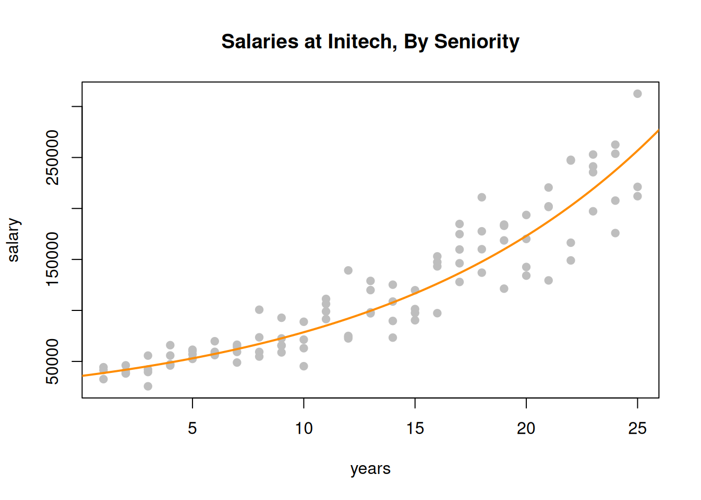
par(mfrow = c(1, 2))
plot(fitted(initech_fit_log), resid(initech_fit_log), col = "grey", pch = 20,
xlab = "Fitted", ylab = "Residuals", main = "Fitted versus Residuals")
abline(h = 0, col = "darkorange", lwd = 2)
qqnorm(resid(initech_fit_log), main = "Normal Q-Q Plot", col = "darkgrey")
qqline(resid(initech_fit_log), col = "dodgerblue", lwd = 2)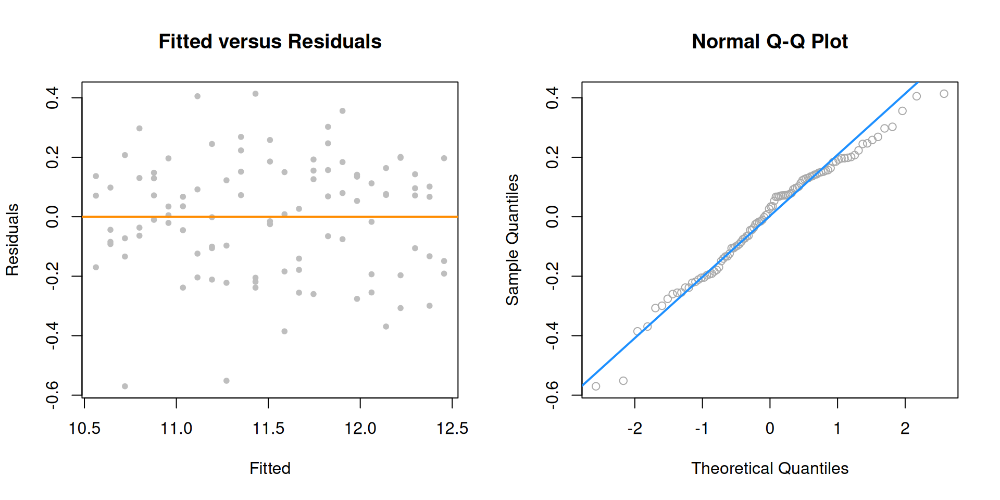
sqrt(mean(resid(initech_fit) ^ 2))[1] 27080.16sqrt(mean(resid(initech_fit_log) ^ 2))[1] 0.1934907sqrt(mean((initech$salary - fitted(initech_fit)) ^ 2))[1] 27080.16sqrt(mean((initech$salary - exp(fitted(initech_fit_log))) ^ 2))[1] 24280.36Predictor Transformations
A Quadratic Model
sim_quad <- function(sample_size = 500) {
x = runif(n = sample_size) * 5
y = 3 + 5 * x ^ 2 + rnorm(n = sample_size, mean = 0, sd = 5)
data.frame(x, y)
}set.seed(314)
quad_data <- sim_quad(sample_size = 200)lin_fit <- lm(y ~ x, data = quad_data)
summary(lin_fit)
Call:
lm(formula = y ~ x, data = quad_data)
Residuals:
Min 1Q Median 3Q Max
-20.363 -7.550 -3.416 8.472 26.181
Coefficients:
Estimate Std. Error t value Pr(>|t|)
(Intercept) -18.3271 1.5494 -11.83 <2e-16 ***
x 24.8716 0.5343 46.55 <2e-16 ***
---
Signif. codes: 0 '***' 0.001 '**' 0.01 '*' 0.05 '.' 0.1 ' ' 1
Residual standard error: 10.79 on 198 degrees of freedom
Multiple R-squared: 0.9163, Adjusted R-squared: 0.9158
F-statistic: 2167 on 1 and 198 DF, p-value: < 2.2e-16plot(y ~ x, data = quad_data, col = "grey", pch = 20, cex = 1.5,
main = "Simulated Quadratic Data")
abline(lin_fit, col = "darkorange", lwd = 2)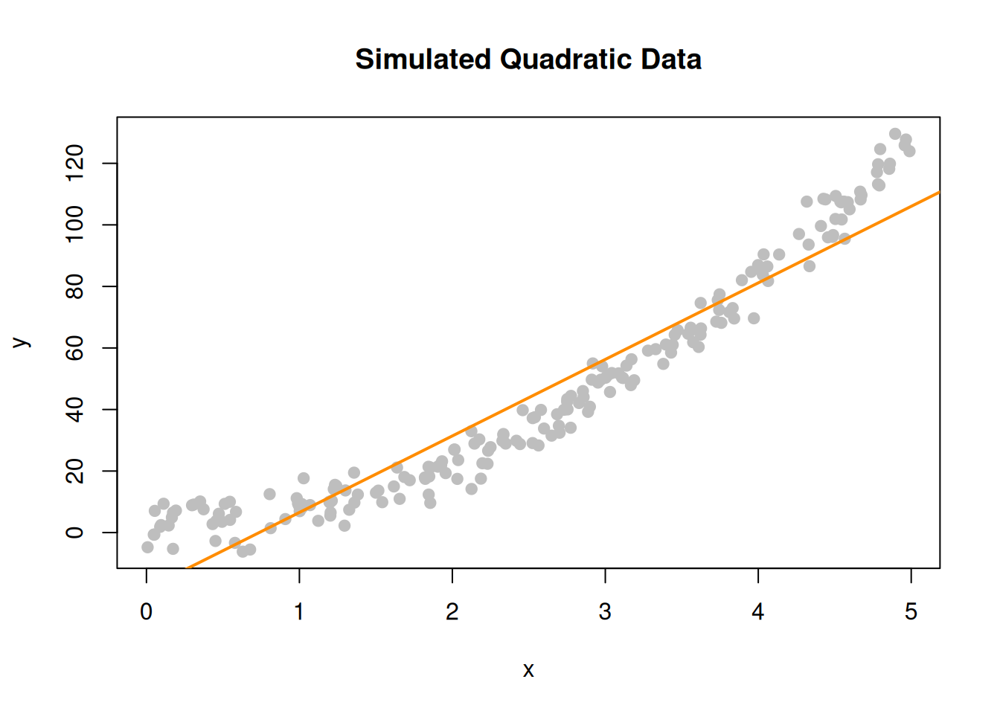
par(mfrow = c(1, 2))
plot(fitted(lin_fit), resid(lin_fit), col = "grey", pch = 20,
xlab = "Fitted", ylab = "Residuals", main = "Fitted versus Residuals")
abline(h = 0, col = "darkorange", lwd = 2)
qqnorm(resid(lin_fit), main = "Normal Q-Q Plot", col = "darkgrey")
qqline(resid(lin_fit), col = "dodgerblue", lwd = 2)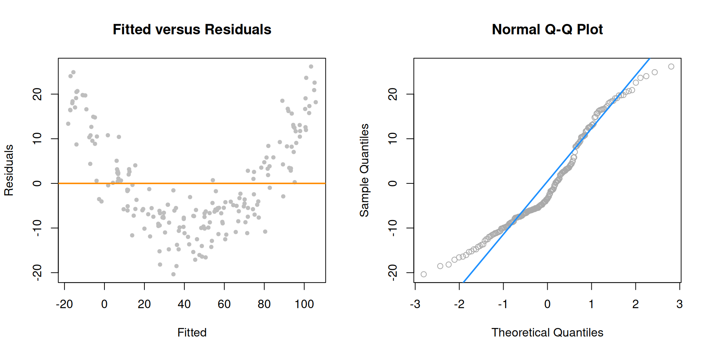
\[ Y_i = \beta_0 + \beta_1 x_i + \beta_2 x_i^2 + \epsilon_i \]
quad_fit <- lm(y ~ x + I(x^2), data = quad_data)
summary(quad_fit)
Call:
lm(formula = y ~ x + I(x^2), data = quad_data)
Residuals:
Min 1Q Median 3Q Max
-11.4167 -3.0581 0.2297 3.1024 12.1256
Coefficients:
Estimate Std. Error t value Pr(>|t|)
(Intercept) 3.0649 0.9577 3.200 0.0016 **
x -0.5108 0.8637 -0.591 0.5549
I(x^2) 5.0740 0.1667 30.433 <2e-16 ***
---
Signif. codes: 0 '***' 0.001 '**' 0.01 '*' 0.05 '.' 0.1 ' ' 1
Residual standard error: 4.531 on 197 degrees of freedom
Multiple R-squared: 0.9853, Adjusted R-squared: 0.9852
F-statistic: 6608 on 2 and 197 DF, p-value: < 2.2e-16plot(y ~ x, data = quad_data, col = "grey", pch = 20, cex = 1.5,
main = "Simulated Quadratic Data")
curve(quad_fit$coef[1] + quad_fit$coef[2] * x + quad_fit$coef[3] * x ^ 2,
from = -5, to = 30, add = TRUE, col = "darkorange", lwd = 2)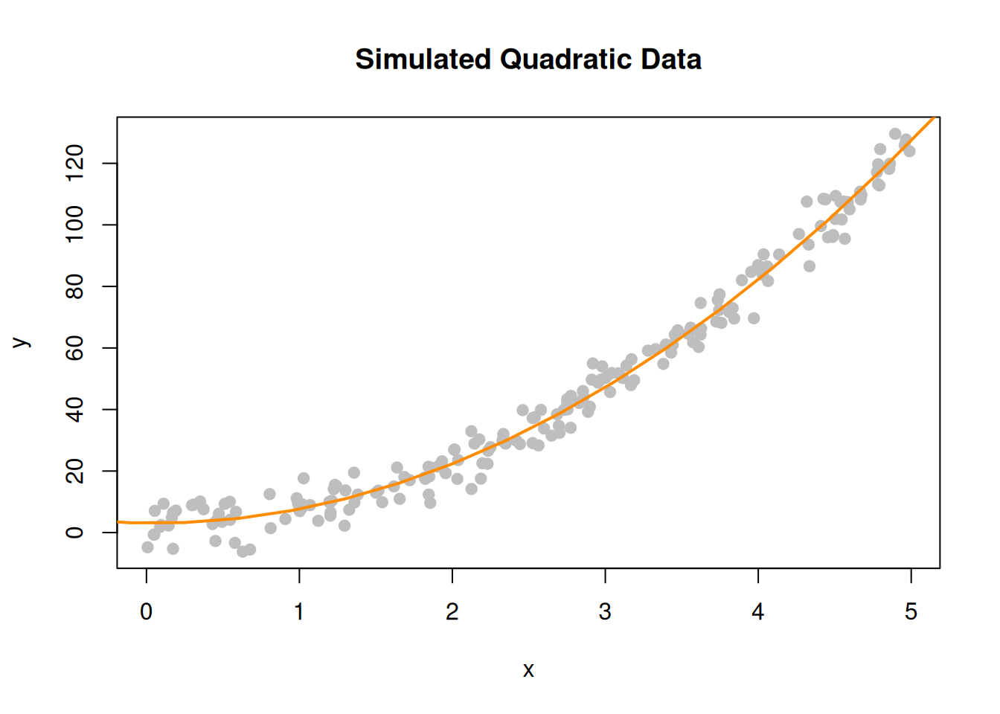
par(mfrow = c(1, 2))
plot(fitted(quad_fit), resid(quad_fit), col = "grey", pch = 20,
xlab = "Fitted", ylab = "Residuals", main = "Fitted versus Residuals")
abline(h = 0, col = "darkorange", lwd = 2)
qqnorm(resid(quad_fit), main = "Normal Q-Q Plot", col = "darkgrey")
qqline(resid(quad_fit), col = "dodgerblue", lwd = 2)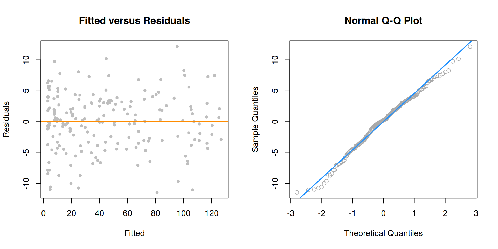
Overfitting and Extrapolation
sim_for_perf <- function() {
x = seq(0, 10)
y = 3 + x - 4 * x ^ 2 + rnorm(n = 11, mean = 0, sd = 25)
data.frame(x, y)
}set.seed(1234)
data_for_perf <- sim_for_perf()fit_correct <- lm(y ~ x + I(x ^ 2), data = data_for_perf)
fit_perfect <- lm(y ~ x + I(x ^ 2) + I(x ^ 3) + I(x ^ 4) + I(x ^ 5) + I(x ^ 6) +
I(x ^ 7) + I(x ^ 8) + I(x ^ 9) + I(x ^ 10),
data = data_for_perf)x_plot <- seq(-5, 15, by = 0.1)
plot(y ~ x, data = data_for_perf, ylim = c(-450, 100), cex = 2, pch = 20)
lines(x_plot, predict(fit_correct, newdata = data.frame(x = x_plot)),
col = "dodgerblue", lwd = 2, lty = 1)
lines(x_plot, predict(fit_perfect, newdata = data.frame(x = x_plot)),
col = "darkorange", lwd = 2, lty = 2)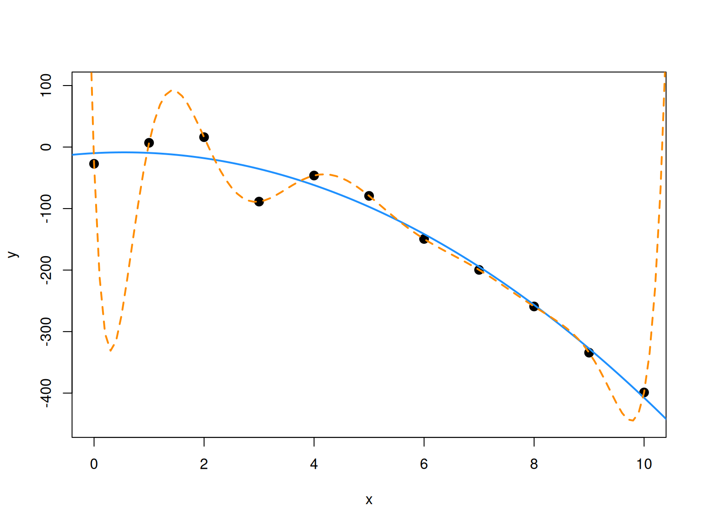
Comparing Polynomial Models
sim_higher <- function(sample_size = 250) {
x = runif(n = sample_size, min = -1, max = 1) * 2
y = 3 + -6 * x ^ 2 + 1 * x ^ 4 + rnorm(n = sample_size, mean = 0, sd = 3)
data.frame(x, y)
}\[ Y_i = \beta_0 + \beta_1 x_i + \beta_2 x_i^2 + \epsilon_i \]
\[ Y_i = \beta_0 + \beta_1 x_i + \beta_2 x_i^2 + \beta_3 x_i^3 + \beta_4 x_i^4 + \epsilon_i \]
\[ Y_i = \beta_0 + \beta_1 x_i + \beta_2 x_i^2 + \beta_3 x_i^3 + \beta_4 x_i^4 + \beta_5 x_i^5 + \beta_6 x_i^6 + \epsilon_i \]
set.seed(42)
data_higher <- sim_higher()plot(y ~ x, data = data_higher, col = "grey", pch = 20, cex = 1.5,
main = "Simulated Quartic Data")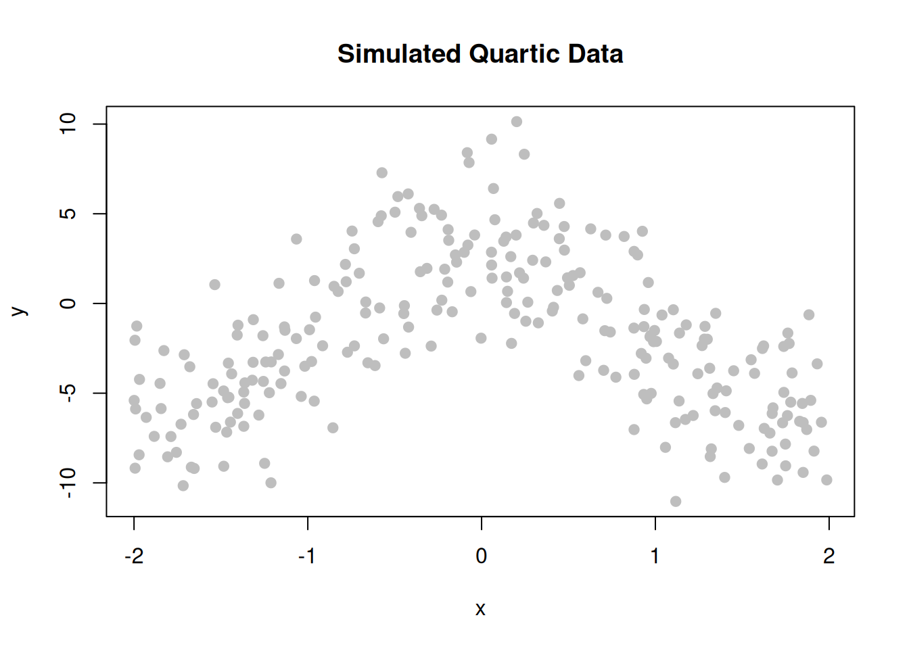
fit_2 <- lm(y ~ poly(x, 2), data = data_higher)
fit_4 <- lm(y ~ poly(x, 4), data = data_higher)plot(y ~ x, data = data_higher, col = "grey", pch = 20, cex = 1.5,
main = "Simulated Quartic Data")
x_plot <- seq(-5, 5, by = 0.05)
lines(x_plot, predict(fit_2, newdata = data.frame(x = x_plot)),
col = "dodgerblue", lwd = 2, lty = 1)
lines(x_plot, predict(fit_4, newdata = data.frame(x = x_plot)),
col = "darkorange", lwd = 2, lty = 2)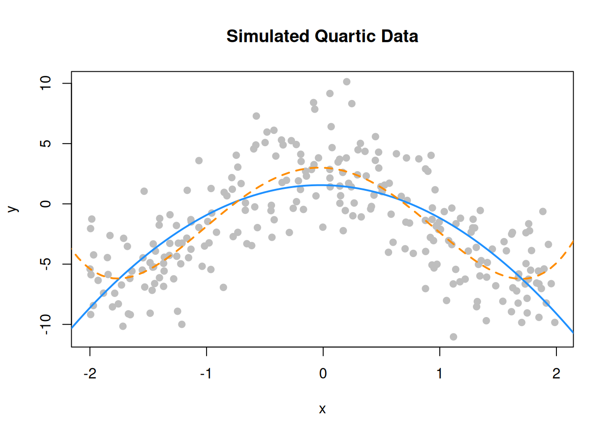
par(mfrow = c(1, 2))
plot(fitted(fit_2), resid(fit_2), col = "grey", pch = 20,
xlab = "Fitted", ylab = "Residuals", main = "Fitted versus Residuals")
abline(h = 0, col = "darkorange", lwd = 2)
qqnorm(resid(fit_2), main = "Normal Q-Q Plot", col = "darkgrey")
qqline(resid(fit_2), col = "dodgerblue", lwd = 2)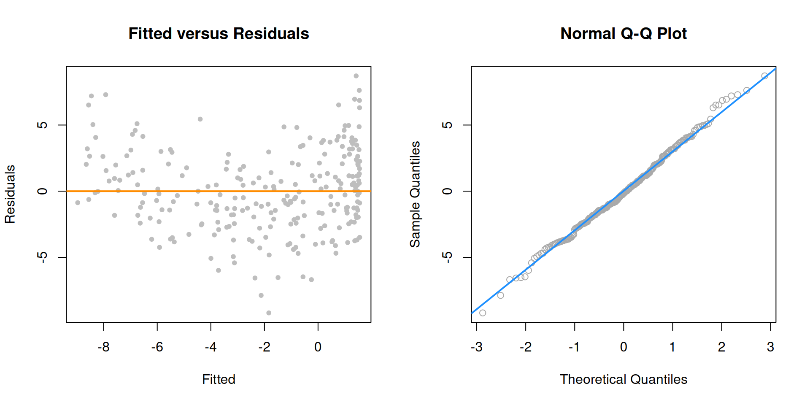
par(mfrow = c(1, 2))
plot(fitted(fit_4), resid(fit_4), col = "grey", pch = 20,
xlab = "Fitted", ylab = "Residuals", main = "Fitted versus Residuals")
abline(h = 0, col = "darkorange", lwd = 2)
qqnorm(resid(fit_4), main = "Normal Q-Q Plot", col = "darkgrey")
qqline(resid(fit_4), col = "dodgerblue", lwd = 2)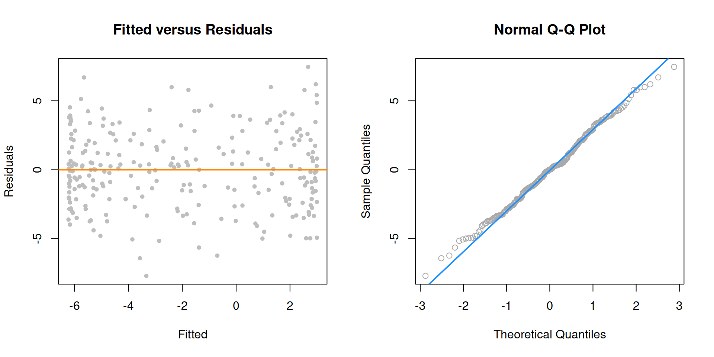
anova(fit_2, fit_4)Analysis of Variance Table
Model 1: y ~ poly(x, 2)
Model 2: y ~ poly(x, 4)
Res.Df RSS Df Sum of Sq F Pr(>F)
1 247 2334.1
2 245 1912.6 2 421.51 26.997 2.536e-11 ***
---
Signif. codes: 0 '***' 0.001 '**' 0.01 '*' 0.05 '.' 0.1 ' ' 1fit_6 <- lm(y ~ poly(x, 6), data = data_higher)anova(fit_4, fit_6)Analysis of Variance Table
Model 1: y ~ poly(x, 4)
Model 2: y ~ poly(x, 6)
Res.Df RSS Df Sum of Sq F Pr(>F)
1 245 1912.6
2 243 1904.4 2 8.1889 0.5224 0.5937poly() Function and Orthogonal Polynomials
\[ Y_i = \beta_0 + \beta_1 x_i + \beta_2 x_i^2 + \beta_3 x_i^3 + \beta_4 x_i^4 + \epsilon_i \]
fit_4a <- lm(y ~ poly(x, degree = 4), data = data_higher)
fit_4b <- lm(y ~ poly(x, degree = 4, raw = TRUE), data = data_higher)
fit_4c <- lm(y ~ x + I(x^2) + I(x^3) + I(x^4), data = data_higher)coef(fit_4a) (Intercept) poly(x, degree = 4)1 poly(x, degree = 4)2
-1.980036 -2.053929 -49.344752
poly(x, degree = 4)3 poly(x, degree = 4)4
0.669874 20.519759 coef(fit_4b) (Intercept) poly(x, degree = 4, raw = TRUE)1
2.9996256 -0.3880250
poly(x, degree = 4, raw = TRUE)2 poly(x, degree = 4, raw = TRUE)3
-6.1511166 0.1269046
poly(x, degree = 4, raw = TRUE)4
1.0282139 coef(fit_4c)(Intercept) x I(x^2) I(x^3) I(x^4)
2.9996256 -0.3880250 -6.1511166 0.1269046 1.0282139 unname(coef(fit_4a))[1] -1.980036 -2.053929 -49.344752 0.669874 20.519759unname(coef(fit_4b))[1] 2.9996256 -0.3880250 -6.1511166 0.1269046 1.0282139unname(coef(fit_4c))[1] 2.9996256 -0.3880250 -6.1511166 0.1269046 1.0282139all.equal(fitted(fit_4a),
fitted(fit_4b))[1] TRUEall.equal(resid(fit_4a),
resid(fit_4b))[1] TRUEsummary(fit_4a)
Call:
lm(formula = y ~ poly(x, degree = 4), data = data_higher)
Residuals:
Min 1Q Median 3Q Max
-7.6982 -2.0334 0.0042 1.9532 7.4626
Coefficients:
Estimate Std. Error t value Pr(>|t|)
(Intercept) -1.9800 0.1767 -11.205 < 2e-16 ***
poly(x, degree = 4)1 -2.0539 2.7940 -0.735 0.463
poly(x, degree = 4)2 -49.3448 2.7940 -17.661 < 2e-16 ***
poly(x, degree = 4)3 0.6699 2.7940 0.240 0.811
poly(x, degree = 4)4 20.5198 2.7940 7.344 3.06e-12 ***
---
Signif. codes: 0 '***' 0.001 '**' 0.01 '*' 0.05 '.' 0.1 ' ' 1
Residual standard error: 2.794 on 245 degrees of freedom
Multiple R-squared: 0.5993, Adjusted R-squared: 0.5928
F-statistic: 91.61 on 4 and 245 DF, p-value: < 2.2e-16summary(fit_4c)
Call:
lm(formula = y ~ x + I(x^2) + I(x^3) + I(x^4), data = data_higher)
Residuals:
Min 1Q Median 3Q Max
-7.6982 -2.0334 0.0042 1.9532 7.4626
Coefficients:
Estimate Std. Error t value Pr(>|t|)
(Intercept) 2.9996 0.3315 9.048 < 2e-16 ***
x -0.3880 0.3828 -1.014 0.312
I(x^2) -6.1511 0.5049 -12.183 < 2e-16 ***
I(x^3) 0.1269 0.1456 0.871 0.384
I(x^4) 1.0282 0.1400 7.344 3.06e-12 ***
---
Signif. codes: 0 '***' 0.001 '**' 0.01 '*' 0.05 '.' 0.1 ' ' 1
Residual standard error: 2.794 on 245 degrees of freedom
Multiple R-squared: 0.5993, Adjusted R-squared: 0.5928
F-statistic: 91.61 on 4 and 245 DF, p-value: < 2.2e-16Inhibit Function
coef(lm(y ~ x + x ^ 2, data = quad_data))(Intercept) x
-18.32715 24.87163 coef(lm(y ~ x + I(x ^ 2), data = quad_data))(Intercept) x I(x^2)
3.0649446 -0.5108131 5.0739805 coef(lm(y ~ x + x:x, data = quad_data))(Intercept) x
-18.32715 24.87163 coef(lm(y ~ x * x, data = quad_data))(Intercept) x
-18.32715 24.87163 coef(lm(y ~ x ^ 2, data = quad_data))(Intercept) x
-18.32715 24.87163 coef(lm(y ~ x + x ^ 2, data = quad_data))(Intercept) x
-18.32715 24.87163 coef(lm(y ~ I(x + x), data = quad_data))(Intercept) I(x + x)
-18.32715 12.43582 coef(lm(y ~ x + x, data = quad_data))(Intercept) x
-18.32715 24.87163 Data Example
pairs(autompg)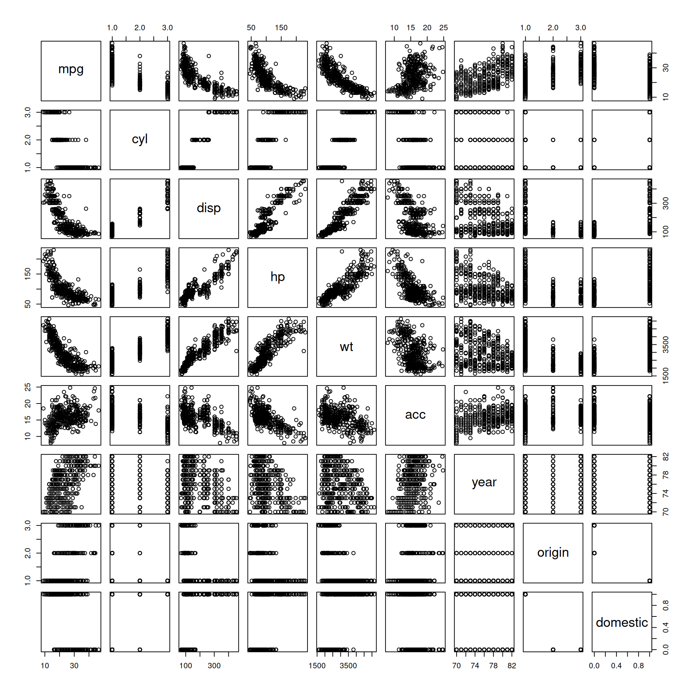
mpg_hp <- lm(mpg ~ hp, data = autompg)
par(mfrow = c(1, 2))
plot(mpg ~ hp, data = autompg, col = "dodgerblue", pch = 20, cex = 1.5)
abline(mpg_hp, col = "darkorange", lwd = 2)
plot(fitted(mpg_hp), resid(mpg_hp), col = "dodgerblue",
pch = 20, cex = 1.5, xlab = "Fitted", ylab = "Residuals")
abline(h = 0, lty = 2, col = "darkorange", lwd = 2)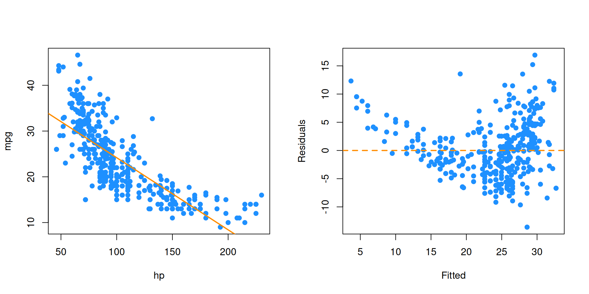
mpg_hp_log <- lm(mpg ~ hp + I(hp ^ 2), data = autompg)
par(mfrow = c(1, 2))
plot(mpg ~ hp, data = autompg, col = "dodgerblue", pch = 20, cex = 1.5)
xplot <- seq(min(autompg$hp), max(autompg$hp), by = 0.1)
lines(xplot, predict(mpg_hp_log, newdata = data.frame(hp = xplot)),
col = "darkorange", lwd = 2, lty = 1)
plot(fitted(mpg_hp_log), resid(mpg_hp_log), col = "dodgerblue",
pch = 20, cex = 1.5, xlab = "Fitted", ylab = "Residuals")
abline(h = 0, lty = 2, col = "darkorange", lwd = 2)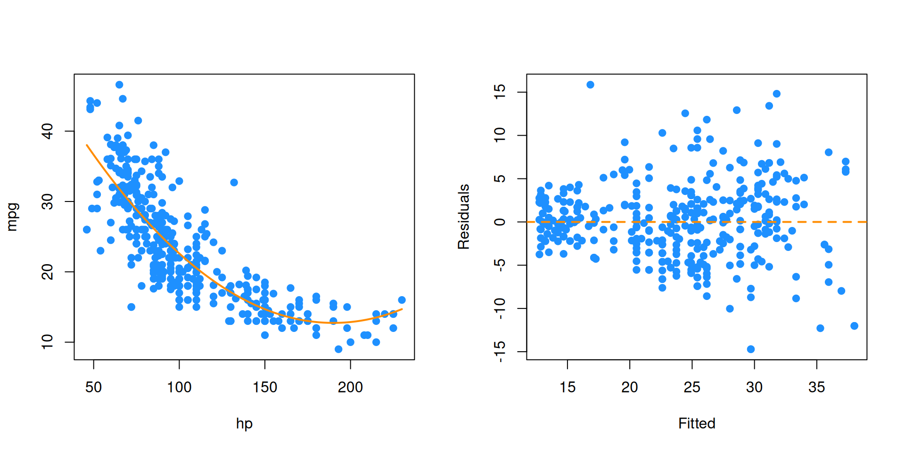
mpg_hp_log <- lm(log(mpg) ~ hp + I(hp ^ 2), data = autompg)
par(mfrow = c(1, 2))
plot(log(mpg) ~ hp, data = autompg, col = "dodgerblue", pch = 20, cex = 1.5)
xplot <- seq(min(autompg$hp), max(autompg$hp), by = 0.1)
lines(xplot, predict(mpg_hp_log, newdata = data.frame(hp = xplot)),
col = "darkorange", lwd = 2, lty = 1)
plot(fitted(mpg_hp_log), resid(mpg_hp_log), col = "dodgerblue",
pch = 20, cex = 1.5, xlab = "Fitted", ylab = "Residuals")
abline(h = 0, lty = 2, col = "darkorange", lwd = 2)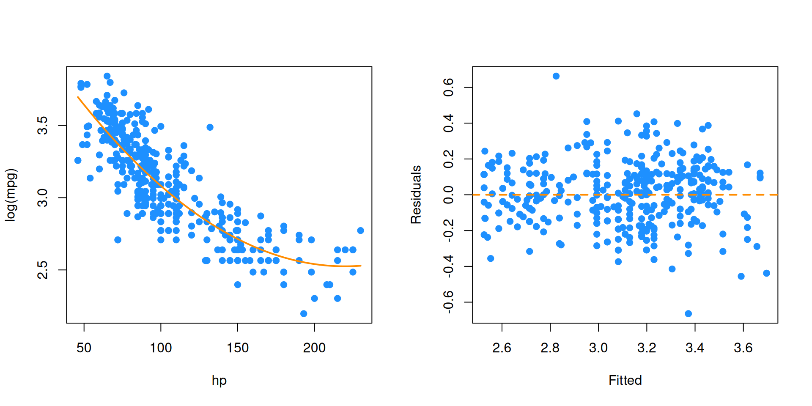
mpg_hp_loglog <- lm(log(mpg) ~ log(hp), data = autompg)
par(mfrow = c(1, 2))
plot(log(mpg) ~ log(hp), data = autompg, col = "dodgerblue", pch = 20, cex = 1.5)
abline(mpg_hp_loglog, col = "darkorange", lwd = 2)
plot(fitted(mpg_hp_loglog), resid(mpg_hp_loglog), col = "dodgerblue",
pch = 20, cex = 1.5, xlab = "Fitted", ylab = "Residuals")
abline(h = 0, lty = 2, col = "darkorange", lwd = 2)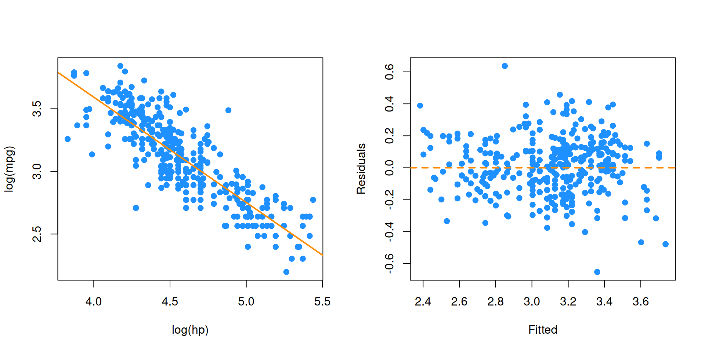
big_model <- lm(mpg ~ disp * hp * domestic, data = autompg)qqnorm(resid(big_model), col = "darkgrey")
qqline(resid(big_model), col = "dodgerblue", lwd = 2)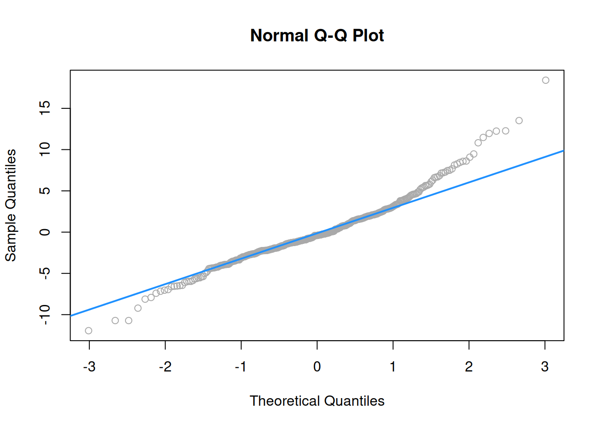
bigger_model <- lm(log(mpg) ~ disp * hp * domestic +
I(disp ^ 2) + I(hp ^ 2), data = autompg)
summary(bigger_model)
Call:
lm(formula = log(mpg) ~ disp * hp * domestic + I(disp^2) + I(hp^2),
data = autompg)
Residuals:
Min 1Q Median 3Q Max
-0.40381 -0.08635 -0.01040 0.09995 0.71365
Coefficients:
Estimate Std. Error t value Pr(>|t|)
(Intercept) 4.276e+00 2.564e-01 16.674 <2e-16 ***
disp -5.289e-03 2.565e-03 -2.062 0.0399 *
hp -7.386e-03 3.309e-03 -2.232 0.0262 *
domestic -2.496e-01 2.787e-01 -0.896 0.3710
I(disp^2) 8.552e-06 4.141e-06 2.065 0.0396 *
I(hp^2) -1.565e-05 1.679e-05 -0.932 0.3519
disp:hp 2.685e-05 3.082e-05 0.871 0.3842
disp:domestic -1.101e-03 2.526e-03 -0.436 0.6631
hp:domestic 7.560e-03 3.689e-03 2.049 0.0411 *
disp:hp:domestic -2.311e-05 2.662e-05 -0.868 0.3859
---
Signif. codes: 0 '***' 0.001 '**' 0.01 '*' 0.05 '.' 0.1 ' ' 1
Residual standard error: 0.1507 on 373 degrees of freedom
Multiple R-squared: 0.8107, Adjusted R-squared: 0.8062
F-statistic: 177.5 on 9 and 373 DF, p-value: < 2.2e-16qqnorm(resid(bigger_model), col = "darkgrey")
qqline(resid(bigger_model), col = "dodgerblue", lwd = 2)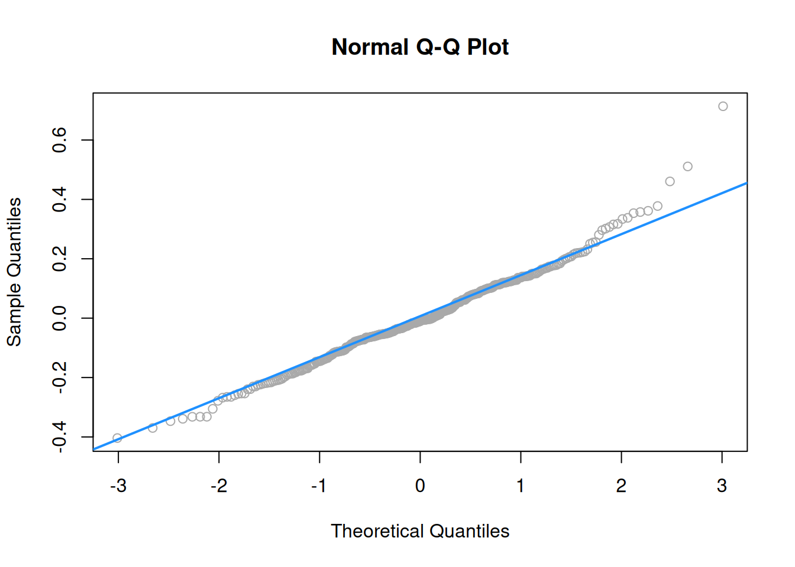